NIST IR 8149 日本語訳
英語タイトル : Developing Trust Frameworks to Support Identity Federations日本語タイトル : ID フェデレーションを支えるトラストフレームワークの策定
公開日 : 2018-01-12
原文URL : https://csrc.nist.gov/pubs/ir/8149/final
翻訳編集 : 自動生成（有志による非公式の日本語訳）, 原文取得日 : 2026-10-31, 訳文 : 373 / 375 ブロック
[要約] NIST IR 8149 は、トラストフレームワークと ID フェデレーションに関する概念を検討し、その策定と実装で考慮すべき事項を示す報告書です。フェデレーション型 ID 管理の導入を目指すコミュニティが、トラストフレームワークを構成する当事者間で多者間協定を結ぶ場合を想定しています。本書は、ID フェデレーションに関与するさまざまな役割、システムルール、法的観点からの考慮事項、適合性を確立し承認する際の課題を検討しています。教育的な文書として用語の標準化と共通理解の確立も目指しており、具体的な手順やテンプレートを示す実践ガイドや、プロトコルに関する技術ガイドとすることは意図していません。
NISTIR 8149
NISTIR 8149
Developing Trust Frameworks to Support Identity Federations
ID フェデレーションを支えるトラストフレームワークの策定
David Temoshok
Christine Abruzzi
David Temoshok
Christine Abruzzi
This publication is available free of charge from:
本刊行物は、次の場所から無料で入手できます:
https://doi.org/10.6028/NIST.IR.8149
https://doi.org/10.6028/NIST.IR.8149
［NIST のロゴ。公的な標章のため、この非公式サイトには掲載していません。原本 PDF を参照してください。］
NISTIR 8149
NISTIR 8149
Developing Trust Frameworks to Support Identity Federations
ID フェデレーションを支えるトラストフレームワークの策定
David Temoshok.
Applied Cybersecurity Division
Information Technology Laboratory
David Temoshok.
応用サイバーセキュリティ部門
情報技術研究所
Christine Abruzzi.
Deloitte & Touche LLP
Rosslyn, VA
Christine Abruzzi.
Deloitte & Touche LLP
Rosslyn, VA
This publication is available free of charge from:
本刊行物は、次の場所から無料で入手できます:
https://doi.org/10.6028/NIST.IR.8149
https://doi.org/10.6028/NIST.IR.8149
January 2018
2018年1月
U.S. Department of Commerce
Wilbur L. Ross, Jr., Secretary
米国商務省
Wilbur L. Ross, Jr. 長官
National Institute of Standards and Technology
Walter Copan, NIST Director and Under Secretary of Commerce for Standards and Technology
国立標準技術研究所
Walter Copan、NIST 所長兼商務次官（標準・技術担当）
National Institute of Standards and Technology Interagency or Internal Report 8149
34 pages (January 2018)
国立標準技術研究所 省庁間報告書／内部報告書 8149
34 ページ（2018年1月）
This publication is available free of charge from:
https://doi.org/10.6028/NIST.IR.8149
本刊行物は、次の場所から無料で入手できます:
https://doi.org/10.6028/NIST.IR.8149
Certain commercial entities, equipment, or materials may be identified in this document in order to describe an experimental procedure or concept adequately. Such identification is not intended to imply recommendation or endorsement by NIST, nor is it intended to imply that the entities, materials, or equipment are necessarily the best available for the purpose.
本書では、実験手順や概念を適切に説明するために、特定の商業的な事業体、機器、資材に言及している場合があります。そのような言及は、NIST による推奨または支持を意味するものではなく、それらの事業体、資材、機器がその目的に利用可能なものの中で必ずしも最良であることを意味するものでもありません。
There may be references in this publication to other publications currently under development by NIST in accordance with its assigned statutory responsibilities. The information in this publication, including concepts and methodologies, may be used by federal agencies even before the completion of such companion publications. Thus, until each publication is completed, current requirements, guidelines, and procedures, where they exist, remain operative. For planning and transition purposes, federal agencies may wish to closely follow the development of these new publications by NIST.
本刊行物には、NIST が法令で定められた責務に従って策定中の他の刊行物への言及が含まれている場合があります。概念や方法論を含め、本刊行物の情報は、そうした関連刊行物の完成前であっても、連邦機関によって利用される場合があります。したがって、各刊行物が完成するまでは、現行の要件、ガイドライン、手順が存在する場合には、それらが引き続き有効です。計画および移行のため、連邦機関は、NIST によるこれらの新しい刊行物の策定状況を注意深く追うことを検討してもよいです。
Organizations are encouraged to review all draft publications during public comment periods and provide feedback to NIST. Many NIST cybersecurity publications, other than the ones noted above, are available at http://csrc.nist.gov/publications.
各組織は、パブリックコメント期間中にすべてのドラフト刊行物を確認し、NIST にフィードバックを提供することが推奨されています。上記以外の NIST のサイバーセキュリティ関連刊行物の多くは、http://csrc.nist.gov/publications で入手できます。
National Institute of Standards and Technology
Attn: Applied Cybersecurity Division, Information Technology Laboratory
100 Bureau Drive (Mail Stop 2000) Gaithersburg, MD 20899-2000
Email: trustframeworks@nist.gov
National Institute of Standards and Technology
Attn: Applied Cybersecurity Division, Information Technology Laboratory
100 Bureau Drive (Mail Stop 2000) Gaithersburg, MD 20899-2000
Email: trustframeworks@nist.gov
All comments are subject to release under the Freedom of Information Act (FOIA).
すべてのコメントは、情報自由法（FOIA）に基づく公開の対象となります。
Reports on Computer Systems Technology
コンピュータシステム技術に関する報告書
The Information Technology Laboratory (ITL) at the National Institute of Standards and Technology (NIST) promotes the U.S. economy and public welfare by providing technical leadership for the Nation’s measurement and standards infrastructure. ITL develops tests, test methods, reference data, proof of concept implementations, and technical analyses to advance the development and productive use of information technology. ITL’s responsibilities include the development of management, administrative, technical, and physical standards and guidelines for the cost-effective security and privacy of other than national security-related information in federal information systems.
米国国立標準技術研究所（NIST）の情報技術研究所（ITL）は、国の測定・標準インフラストラクチャに技術的リーダーシップを提供することにより、米国の経済と公共の福祉を促進しています。ITL は、情報技術の発展と生産的な利用を推進するため、テスト、テスト方法、参照データ、概念実証の実装、技術分析を開発しています。ITL の責務には、連邦情報システムにおける国家安全保障関連情報以外の情報のセキュリティとプライバシーを費用対効果の高い形で確保するための、管理面・運用面・技術面・物理面の標準とガイドラインの策定が含まれます。
Abstract
概要
When supported by trust frameworks, identity federations provide a secure method for leveraging shared identity credentials across communities of similarly-focused online service providers. This document explores the concepts around trust frameworks and identity federations and provides topics to consider in their development and implementation.
トラストフレームワークによって支えられる ID フェデレーションは、同様の目的を持つオンラインサービスプロバイダーのコミュニティ全体で、共有されたアイデンティティのクレデンシャルを活用するための安全な方法を提供します。本書は、トラストフレームワークと ID フェデレーションに関する概念を検討し、その策定と実装で考慮すべき事項を示します。
Keywords
キーワード
Identity; identity federation; trust frameworks; identity management; multilateral agreements; credential service providers; authentication; relying parties; secure online transactions; NSTIC; interoperability, information security; cybersecurity; identity proofing
ID、ID フェデレーション、トラストフレームワーク、ID 管理、多者間協定、クレデンシャルサービスプロバイダー、認証、依拠当事者、安全なオンライン取引、NSTIC、相互運用性、情報セキュリティ、サイバーセキュリティ、本人確認
Acknowledgments
謝辞
The authors would like to thank Ryan Galluzzo, Amanda Patino, Ellen Nadeau, and Kaitlin Boeckl for their contributions to this report
著者らは、本報告書への貢献に対し、Ryan Galluzzo、Amanda Patino、Ellen Nadeau、Kaitlin Boeckl の各氏に感謝します。
Table of Contents
目次
List of Appendices
付録の一覧
List of Figures
図の一覧
1 Introduction
1 はじめに
It is difficult to overstate the impact the internet has on modern life. Our ability to connect with people and organizations online presents virtually unlimited opportunities for delivering services and conducting business. But, as many organizations and businesses have discovered, doing business with people over the internet presents its own particular challenges, not the least of which is being able to identify exactly with whom they are interacting.
インターネットが現代生活に与える影響は、いくら強調しても足りません。オンラインで人や組織とつながれることは、サービスの提供や事業の遂行に、事実上無限の機会をもたらします。しかし、多くの組織や企業が気づいてきたように、インターネットを介して人々と取引を行うことには、それ特有の課題があります。なかでも重要なのは、やり取りの相手が誰であるかを正確に識別できることです。
In traditional environments, if an organization needed to verify with whom it was doing business, it could require its clients and customers to show up in person and present proof of their identity. For obvious reasons, online service providers have devised other means of identifying who is accessing their systems. More often than not, this involves having their users register and create individual accounts for use in accessing their specific services. In practice, this means that instead of being able to focus on delivering the best possible services and products they can, providers must also devote resources to creating and managing users’ login credentials.
従来の環境では、組織が誰と取引しているかを確認する必要がある場合、顧客や取引先に直接出向いて身元を証明するものを提示するよう求めることができました。当然ながら、オンラインサービスプロバイダーは、自らのシステムにアクセスしている者を識別する別の手段を考案してきました。多くの場合、利用者に登録してもらい、それぞれのサービスにアクセスするための個別アカウントを作成してもらいます。実際には、プロバイダーは可能な限り優れたサービスや製品の提供に専念できず、ユーザーのログイン用クレデンシャルの作成と管理にも資源を割かなければなりません。
Online service providers are not the only ones that face additional challenges from this model. Most consumers are all too familiar with the sign-in screen requiring them to enter their username and password. While widely-known best practices state that usernames and passwords should not be shared between services, maintaining an ever-growing list of logins creates a burden for individuals. In many cases, users would rather risk having their identities compromised than go through the trouble of creating separate login credentials for each website with which they do business1.
このモデルによって追加の課題に直面するのは、オンラインサービスプロバイダーだけではありません。ほとんどの消費者は、ユーザー名とパスワードの入力を求めるサインイン画面をよく知っています。ユーザー名とパスワードはサービス間で共有すべきではないというのが広く知られたベストプラクティスですが、増え続けるログイン情報の一覧を管理することは、個人にとって負担になります。多くの場合、ユーザーは、取引のある Web サイトごとに別々のログイン用クレデンシャルを作成する手間をかけるくらいなら、自分のアイデンティティが侵害されるリスクを取ることを選びます1。
To address these challenges, communities and organizations that share a common user base and transaction types have developed a means to allow users to sign on and access multiple services through shared login and authentication processes. This is known as federated identity management; that is, users are enabled to federate their identity through common, shared authentication processes and access multiple online organizations and services. Federated identity management is inherently based on trust. Organizations must trust the federated identity management processes of the other federation participants in order to allow access to users that were authenticated by another entity. The rules for federated identity management are known as trust frameworks and the organizations that agree to follow such rules and participate are known as identity federations. These identity federations serve as clearinghouses that can provide a basis for individuals to prove their identities, or attributes when necessary, to participating online service providers without compromising their individual privacy or increasing the risk of harmful data breaches. In time, an inter-federation of such clearinghouses can ensure that services will be available to all individuals for their online transactions both with government and across the global commercial marketplace.
こうした課題に対処するため、利用者層や取引の種類を共有するコミュニティや組織は、共有ログイン・認証プロセスを通じて、ユーザーが複数のサービスにサインオンしてアクセスできるようにする手段を開発してきました。これはフェデレーション型ID管理と呼ばれます。つまり、ユーザーは共通の認証プロセスを通じて自分のアイデンティティをフェデレートし、複数のオンライン組織やサービスにアクセスできるようになります。フェデレーション型ID管理は本質的に信頼に基づいています。組織は、別のエンティティによって認証されたユーザーにアクセスを許可するために、フェデレーションの他の参加者が用いるID管理プロセスを信頼しなければなりません。フェデレーション型ID管理のルールはトラストフレームワークと呼ばれ、そのようなルールに従うことに同意して参加する組織はIDフェデレーションと呼ばれます。これらのIDフェデレーションは情報交換所として機能し、参加するオンラインサービスプロバイダーに対し、個人のプライバシーを損なったり、有害なデータ侵害のリスクを高めたりすることなく、個人が自らのアイデンティティを、必要な場合は属性を証明するための基盤を提供できます。やがて、こうした情報交換所の間のインターフェデレーションによって、政府との取引でも世界の商業市場全体にわたる取引でも、すべての個人がオンライン取引でサービスを利用できるようになります。

2つの図です。上の「Non-Federated Model（非連携モデル）」では、見出しの枠に「User」と「Relying Parties' Credentials」があり、利用者のアイコンから3枚の別々の資格情報カードへ矢印が伸び、それぞれが別のサービスのアイコン（メール、建物、吹き出し）につながっています。下の「Federated Model（連携モデル）」では、見出しの枠に「User」「Credential Service Provider」「Relying Parties」があり、利用者のアイコンから1枚の資格情報カード（クレデンシャルサービスプロバイダー）へ矢印が伸び、そこから同じ3つのサービスのアイコンへ枝分かれしています。
Figure 1 – Federated v. Non-Federated Identity.
図 1 – フェデレーション型 ID と非フェデレーション型 ID。
1.1 Purpose & Scope
1.1 目的と範囲
This document provides considerations for communities interested in pursuing federated identity management, and thus need to establish multilateral agreements between the parties that make up a trust framework. It examines the various roles involved in an identity federation, some considerations from a legal standpoint, and the issues of establishing and recognizing conformance.
本書は、フェデレーション型 ID 管理の導入を目指すコミュニティが、トラストフレームワークを構成する当事者間で多者間協定を結ぶ必要がある場合に、考慮すべき事項を示します。本書は、ID フェデレーションに関与するさまざまな役割、法的観点からの考慮事項、そして適合性を確立し承認する際の課題を検討します。
More broadly, this publication will serve as an educational document to spread the knowledge of identity federations and trust frameworks to a more general audience. Additionally, the National Institute of Standards and Technology (NIST) seeks to increase standardization of the language around identity federation and trust frameworks and to set a broad, common understanding of the concepts in order to facilitate their widespread adoption.
より広くは、本刊行物は、ID フェデレーションとトラストフレームワークに関する知識をより一般の読者に広めるための教育的な文書として機能します。加えて、国立標準技術研究所（NIST）は、ID フェデレーションとトラストフレームワークに関する用語の標準化を進め、それらの概念について広く共通した理解を確立することで、その普及を促進することを目指しています。
While this document explores some elements for consideration when forming an identity federation and trust framework, it is not intended to be a how-to guide that gives specific instructions or templates for their development; NIST believes this is best left to experts who are familiar with the needs and risks associated with their specific community. Furthermore, this document is not a technical guide for the protocols and interfaces needed to exchange information in a federation.
本書は、ID フェデレーションとトラストフレームワークを形成する際に考慮すべきいくつかの要素を検討しますが、その策定のための具体的な手順やテンプレートを示す実践ガイドとすることは意図していません。NIST は、それは各コミュニティ特有のニーズとリスクに精通した専門家に委ねるのが最善であると考えています。さらに、本書は、フェデレーション内で情報を交換するために必要なプロトコルやインターフェースに関する技術ガイドでもありません。
1.2 Audience
1.2 想定読者
NIST created this publication for organizations that provide online services and seek to minimize the cost and administrative burden of operating stand-alone identity management systems for their online users. The document is written for organizations that could benefit from assistance in forming an identity federation with other online service providers and focuses on the administrative aspects for doing so. Typically, identity federations are formed among organizations that have a common, or largely overlapping, user base and that provide similar, or complementary, types of online services and applications.
NIST は本刊行物を、オンラインサービスを提供し、オンラインユーザー向けのスタンドアロンの ID 管理システムを運用する費用と管理上の負担を最小限に抑えたいと考える組織のために作成しました。本書は、他のオンラインサービスプロバイダーとの ID フェデレーションの形成に関する支援が役立つ組織を対象に書かれており、そのための管理面に焦点を当てています。通常、ID フェデレーションは、共通の、またはほぼ重なる利用者層を持ち、類似の、または補完的な種類のオンラインサービスやアプリケーションを提供する組織の間で形成されます。
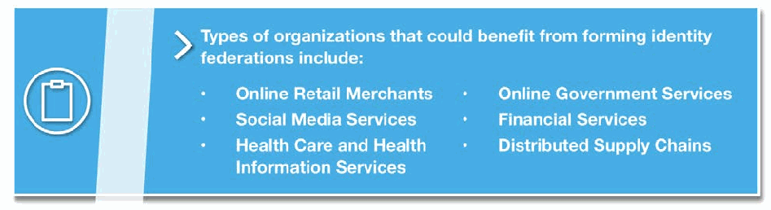
クリップボードのアイコンのある青い囲み枠です。見出しは「Types of organizations that could benefit from forming identity federations include:（IDフェデレーションの形成から利益を得られる組織の種類には、次のものがあります）」で、2列の箇条書きに「Online Retail Merchants（オンライン小売業者）」「Social Media Services（ソーシャルメディアサービス）」「Health Care and Health Information Services（医療・医療情報サービス）」「Online Government Services（オンライン行政サービス）」「Financial Services（金融サービス）」「Distributed Supply Chains（分散型サプライチェーン）」が並んでいます。
The wide range of online services, industries and sectors suggests diverse needs and challenges for identity management. However, NIST observes a large degree of commonality and overlapping requirements for identity management solutions and options across industry sectors. This document demonstrates that trust frameworks can both provide a foundation for trust in federated identity among many diverse communities of interest while also presenting the range and scope of options that organizations require when developing trust frameworks to address the unique needs of their specific communities.
オンラインサービス、業界、分野が多岐にわたることは、ID 管理に対するニーズと課題も多様であることを示唆しています。しかし NIST は、業界分野を問わず、ID 管理ソリューションとその選択肢には、共通点と重なり合う要件が大いにあると見ています。本書は、トラストフレームワークが、多様な関心コミュニティにまたがるフェデレーション型 ID における信頼の基盤を提供できる一方で、組織が自らの特定のコミュニティ固有のニーズに対応するトラストフレームワークを策定する際に必要とする選択肢の幅と範囲も示せることを示します。
2 Identity Federation & Trust Frameworks
2 ID フェデレーションとトラストフレームワーク
In an identity ecosystem that supports secure and convenient access to online services, trust frameworks play a vital role by laying the foundation upon which the various participants can trust each other. Put simply, trust frameworks aim to move from expensive and resource intensive bilateral agreements toward streamlined, efficient, and reliable multilateral arrangements that still meet the needs of all participants
オンラインサービスへの安全で便利なアクセスを支える ID エコシステムにおいて、トラストフレームワークは、さまざまな参加者が互いを信頼できる基盤を築くことで、重要な役割を果たします。端的に言えば、トラストフレームワークは、費用も資源もかかる二者間協定から、すべての参加者のニーズを満たしつつ、合理化された効率的で信頼できる多者間の取り決めへと移行することを目指しています。
A trust framework is developed by a community whose members have similar goals and perspectives. It defines the rights and responsibilities of that community’s participants in the Identity Ecosystem; specifies the policies and standards specific to the community; and defines the community-specific processes and procedures that provide assurance. A trust framework considers the level of risk associated with the transaction types of its participants; for example, for regulated industries, it could incorporate the requirements particular to that industry. Different trust frameworks can exist within the Identity Ecosystem, and sets of participants can tailor trust frameworks to meet their particular needs. In order to be a part of the Identity Ecosystem, all trust frameworks must still meet the baseline standards established by the Identity Ecosystem Framework. 2
トラストフレームワークは、類似の目標と視点を持つメンバーからなるコミュニティによって策定されます。トラストフレームワークは、アイデンティティエコシステムにおけるそのコミュニティの参加者の権利と責任を定め、そのコミュニティに固有のポリシーと標準を規定し、保証を提供するコミュニティ固有のプロセスと手順を定義します。トラストフレームワークは、参加者の取引の種類に関連するリスクのレベルを考慮します。たとえば、規制対象の業界では、その業界に特有の要件を取り込むことができます。アイデンティティエコシステム内には異なるトラストフレームワークが存在でき、参加者の集まりは、それぞれのニーズに合わせてトラストフレームワークを調整できます。アイデンティティエコシステムの一部となるには、すべてのトラストフレームワークが、Identity Ecosystem Framework が定める基準となる標準を満たさなければなりません。 2
Specific benefits for organizations participating in an identity federation may include:
ID フェデレーションに参加する組織にとっての具体的な利点には、次のようなものがあります。
•Increased efficiency and cost savings from not having to manage login information for users;
•ユーザーのログイン情報を管理する必要がなくなることによる、効率の向上とコスト削減
•Improved risk management through the use of multilateral agreements;
•多者間協定の活用によるリスク管理の改善
•Reduced privacy risks and liability for online service providers that rely upon federated identities, due to limited replication of users’ personally identifiable information (PII) across the internet;
•ユーザーの個人を特定できる情報（PII）がインターネット上で複製される範囲が限られることによる、フェデレーション型 ID に依拠するオンラインサービスプロバイダーのプライバシーリスクと責任の低減
•Improved system design criteria based on defined security expectations aligned with the community being served; and
•対象とするコミュニティに合わせて定義されたセキュリティ上の期待事項に基づく、システム設計基準の改善
•Improved customer convenience and risk reduction associated with having fewer discrete credentials to manage.
•管理すべき個別のクレデンシャルが減ることによる、顧客の利便性の向上とリスクの低減
2.1 Identity Federations
2.1 ID フェデレーション
Federated identity management is a means to enable users to access the systems and applications of multiple organizations using one login credential. Identity federation allows users to maintain login credentials with multiple credential service providers (CSPs) (e.g., email or social media providers) and then choose among them when logging into different online services. Users register once with their selected CSP and establish online credentials to be managed by that CSP for authentication. When a user wants to access a relying party (RP) service or application (e.g., a bank or online retailer), that user is redirected to their preferred CSP for authentication using the credentials the user established with that CSP. The CSP then presents the status of the authentication to the RP so that the user may be granted access to the service or application they wish to use. In this way, users do not need to register or establish login credentials with each service they want to access, and instead they only need to provide their credentials to their selected CSP.
フェデレーション型 ID 管理は、ユーザーが 1 つのログイン用クレデンシャルで複数の組織のシステムやアプリケーションにアクセスできるようにする手段です。ID フェデレーションにより、ユーザーは複数のクレデンシャルサービスプロバイダー（CSP）（たとえば、電子メールやソーシャルメディアのプロバイダー）にログイン用クレデンシャルを保持し、異なるオンラインサービスにログインする際にそれらの中から選択できます。ユーザーは、選んだ CSP に一度だけ登録し、その CSP が認証のために管理するオンラインのクレデンシャルを確立します。ユーザーが依拠当事者（RP）のサービスやアプリケーション（たとえば、銀行やオンライン小売業者）にアクセスしたいときは、そのユーザーは、希望する CSP にリダイレクトされ、その CSP に確立したクレデンシャルを使って認証されます。その後、CSP は認証の状態を RP に提示し、ユーザーが利用したいサービスやアプリケーションへのアクセスを許可されるようにします。このように、ユーザーはアクセスしたいサービスごとに登録したりログイン用クレデンシャルを確立したりする必要がなく、選んだ CSP にクレデンシャルを提示するだけで済みます。
In the simplest terms, identity federations consist of CSPs and RPs that have agreed to participate in a specific federated identity management arrangement. CSPs register users, establish credentials, authenticate users, and assert user authentication status to federation RPs. RPs consume identity assertions provided by the CSPs and use the authentication status information to authorize user access to online services and applications. Trust amongst members of an identity federation is foundational to its operation and is established through the set of agreements and associated rules that are specific to that community. Such rules for a federated identity management arrangement are known as its trust framework.
最も単純に言えば、ID フェデレーションは、特定のフェデレーション型 ID 管理の取り決めに参加することに同意した CSP と RP で構成されます。CSP は、ユーザーを登録し、クレデンシャルを確立し、ユーザーを認証し、ユーザーの認証状態をフェデレーションの RP にアサートします。RP は、CSP が提供する ID アサーションを利用し、その認証状態の情報を使って、ユーザーにオンラインサービスやアプリケーションへのアクセスを許可します。 ID フェデレーションのメンバー間の信頼は、その運用の基盤であり、そのコミュニティに固有の一連の協定と関連するルールによって確立されます。 フェデレーション型 ID 管理の取り決めに関するこのようなルールは、そのトラストフレームワークと呼ばれます。
![Diagram titled "Roles and Process for Federated Model". A legend labels the roles: "User", "Relying Party (RP)", "Credential Service Provider (CSP)". Five numbered panels show the steps, each with a User, an RP and a CSP icon: 1 "Visit" – arrow from User to RP; 2 "Redirect" – curved arrow from RP to CSP; 3 "Authenticate" – arrow from User to CSP; 4 "Redirect" and "Authentication Status" – curved arrow from CSP back to RP; 5 "Access" – arrow from User to RP. Panels 3 and 4 are grouped and labeled "Authentication Transaction".](assets/ir-8149/p0010-figure-01.png)
「Roles and Process for Federated Model（連携モデルの役割と処理）」と題した図です。凡例で役割を「User（利用者）」「Relying Party (RP)（依拠当事者）」「Credential Service Provider (CSP)（クレデンシャルサービスプロバイダー）」と示します。番号付きの5つの枠に、それぞれ利用者・RP・CSPのアイコンがあり、手順を示します。1「Visit（訪問）」は利用者からRPへの矢印、2「Redirect（リダイレクト）」はRPからCSPへの曲がった矢印、3「Authenticate（認証）」は利用者からCSPへの矢印、4「Redirect」と「Authentication Status（認証の状態）」はCSPからRPへ戻る曲がった矢印、5「Access（アクセス）」は利用者からRPへの矢印です。3と4は「Authentication Transaction（認証トランザクション）」としてまとめて囲まれています。
Figure 2 – Authentication Transactions within a Federated Model
図 2 – フェデレーションモデルにおける認証トランザクション
2.2 Trust Frameworks
2.2 トラストフレームワーク
As defined above, a trust framework is the set of rules and policies that govern how the federation members will operate and interact, including:
前述のとおり、トラストフレームワークは、フェデレーションのメンバーがどのように運営し、やり取りするかを規定する一連のルールとポリシーであり、次の事項を含みます。
•Conducting identity management responsibilities;
•ID 管理上の責務の遂行
•Sharing identity information;
•ID 情報の共有
•Using identity information that has been shared with them;
•共有された ID 情報の利用
•Protecting and securing identity information;
•ID 情報の保護とセキュリティ確保
•Performing specific roles within the federation; and
•フェデレーション内での特定の役割の遂行
•Managing liability and legal issues.
•責任と法的問題の管理
Trust frameworks serve as the basis for the multilateral agreements that enable the trust and governance of a federation’s operations among all of the federation’s members.
トラストフレームワークは、フェデレーションのすべてのメンバー間で、フェデレーションの運営に対する信頼とガバナンスを可能にする多者間協定の基礎となります。
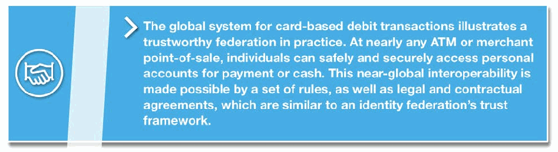
握手のアイコンのある青い囲み枠です。本文は「カードによるデビット取引の世界的な仕組みは、信頼できる連携の実例を示しています。ほぼすべての ATM や加盟店の販売時点（POS）で、個人は支払いや現金引き出しのために自分の口座へ安全かつ確実にアクセスできます。このほぼ世界規模の相互運用性は、IDフェデレーションのトラストフレームワークに類似した一連の規則と、法的および契約上の合意によって可能になっています。」
3 Roles & Responsibilities
3 役割と責任
3.1 Federation Administrators
3.1 フェデレーション管理者
Role description
役割の説明
Federation administrators are responsible for the governance of an identity federation. They are organizations, often set-up by their constituent members, to administrate the activities associated with operating an identity federation.3 The structure of this organization may vary, depending on the nature of the community, the level of risk an identity federation seeks to address, and whether or not it is driven by regulatory or other such considerations. For example, federation administrators may take the form of government programs, corporate entities, not-for-profit membership organizations, or industry associations.
フェデレーション管理者は、ID フェデレーションのガバナンスを担います。フェデレーション管理者は、ID フェデレーションの運営に伴う活動を管理するために、多くの場合、構成メンバーによって設立される組織です。3 この組織の構造は、コミュニティの性質、ID フェデレーションが対処しようとするリスクのレベル、規制その他の考慮事項によって推進されるかどうかによって異なる場合があります。たとえば、フェデレーション管理者は、政府のプログラム、企業体、非営利の会員組織、業界団体などの形をとることがあります。
Responsibilities
責任
Federation administrators:
フェデレーション管理者の責任は次のとおりです。
•Establish the trust framework rules and requirements;
•トラストフレームワークのルールと要件を確立する
•Develop and manage the documentation;
•文書を作成し管理する
•Manage membership and participation;
•メンバーシップと参加を管理する
•Manage member conformance to the trust framework’s rules;
•トラストフレームワークのルールへのメンバーの適合を管理する
•Maintain, promote and evolve the federation; and
•フェデレーションを維持、促進し、発展させる
•Oversee the smooth operation of the federation.
•フェデレーションの円滑な運営を監督する
3.2 Credential Service Providers
3.2 クレデンシャルサービスプロバイダー
Role Description
役割の説明
Credential service providers (CSPs) issue and maintain the credentials that individuals use to access online services.4 For example, some email providers act as CSPs when they allow users to enter their credentials to log into other vendor’s services. Some social media sites also offer this option. CSPs may specialize in managing identities for the specific community served by a trust framework, or may offer a more broad-based identity service, of which some of the users in the community fit the profile targeted by the framework. In the second scenario, a CSP may operate in multiple trust frameworks, in effect providing a single user identity service in multiple communities, such as in both healthcare and banking. In this way, CSPs act as technical clearinghouses for digital identity services.
クレデンシャルサービスプロバイダー（CSP）は、個人がオンラインサービスへのアクセスに使う認証情報を発行し、維持します。4 たとえば、一部の電子メールプロバイダーは、ユーザーが他のベンダーのサービスにログインするために自分の認証情報を入力できるようにする場合、CSP として機能します。一部のソーシャルメディアサイトも、この選択肢を提供しています。CSP は、トラストフレームワークが対象とする特定のコミュニティ向けの ID 管理に特化する場合もあれば、より広範な ID サービスを提供し、そのコミュニティのユーザーの一部がフレームワークの対象とするプロファイルに当てはまる場合もあります。後者の場合、CSP は複数のトラストフレームワークで運営でき、事実上、医療と銀行の両方といった複数のコミュニティに、単一のユーザー ID サービスを提供することになります。このように、CSP はデジタル ID サービスの技術的な仲介機関として機能します。
Responsibilities
責任
CSPs:
CSP の責任は次のとおりです。
•Register and enroll users;
•ユーザーの登録とエンロールメントを行う
•Perform identity proofing of users;
•ユーザーの本人確認を行う
•Manage credentials; and
•クレデンシャルを管理する
•Perform user authentication and authentication status assertion.
•ユーザー認証と認証状態のアサーションを行う
See Section 5, System Rules, of this document for a more detailed explanation of these activities
これらの活動のより詳しい説明については、本書のセクション 5「システムルール」を参照してください
3.3 Relying Parties
3.3 依拠当事者
Role Description
役割の説明
Online service providers operating within a federation are known as relying parties (RPs) and are organizations that offer services, applications, and information that require restricted access, such as online banking services, online healthcare provider services, and online retailers. Relying parties accept (rely upon) and utilize user authentication status assertions from federation CSPs, rather than operating separate identity management systems of their own. RPs must be able to trust the identity information they receive from CSPs in order to make risk-based decisions about whether or not to allow specific users access to their online services and products. For convenience and continuity of service, an RP may still establish and maintain accounts for its users and customers (for example, to track browsing or purchase history), but this information is separate from the identity and access management function. In such a scenario, the RP outsources user authentication to federation CSPs, subject to the rules of the federation.
フェデレーション内で運営されるオンラインサービスプロバイダーは、依拠当事者（RP）と呼ばれ、オンラインバンキングサービス、オンライン医療提供者サービス、オンライン小売業者など、アクセス制限を必要とするサービス、アプリケーション、情報を提供する組織です。依拠当事者は、独自の ID 管理システムを別個に運用するのではなく、フェデレーションの CSP によるユーザー認証状態のアサーションを受け入れ（依拠し）、利用します。RP は、特定のユーザーにオンラインサービスや製品へのアクセスを許可するかどうかについてリスクに基づく判断を下すために、CSP から受け取る ID 情報を信頼できなければなりません。利便性とサービスの継続性のために、RP は、ユーザーや顧客のアカウントを（たとえば閲覧履歴や購入履歴を追跡するために）確立し維持してもかまいませんが、この情報は ID・アクセス管理機能とは別のものです。この場合、RP は、フェデレーションのルールに従って、ユーザー認証をフェデレーションの CSP に委託することになります。
In this way RPs can achieve their goals of providing their online service(s) without bearing the cost of managing identity services that are neither core to their business nor their core competency.
このようにして、RP は、自らの事業の中核でも中核的な能力でもない ID サービスの管理費用を負担することなく、オンラインサービスを提供するという目標を達成できます。
Responsibilities
責任
RPs:
RP の責任は次のとおりです。
•Consume the identity information provided by the CSPs and
•CSP が提供する ID 情報を利用し、
•Authorize access to users in accordance with the rules of the federation.
•フェデレーションのルールに従って、ユーザーへのアクセスを認可する
3.4 Users
3.4 ユーザー
Role Description
役割の説明
As consumers of the services offered by the RPs, end users are not formally members of an identity federation; however, they typically bear certain responsibilities depending on the nature of the trust framework.
エンドユーザーは、RP が提供するサービスの消費者であり、正式には ID フェデレーションのメンバーではありませんが、通常は、トラストフレームワークの性質に応じて一定の責任を負います。
By having credentials that are accepted under trust frameworks, users can have a consistent experience in which their credentials are accepted and their data treated in the same manner, regardless of provider.
トラストフレームワークの下で受け入れられるクレデンシャルを持つことで、ユーザーは、プロバイダーにかかわらず、自分のクレデンシャルが受け入れられ、データが同じように扱われるという一貫した体験を得られます。
Responsibilities
責任
Users:
ユーザーの責任は次のとおりです。
•Protect their identities and digital credentials from fraud and misuse;
•自分のアイデンティティとデジタルクレデンシャルを、不正や悪用から保護する
•Use their credentials in the manner for which they are intended; and
•クレデンシャルを、本来意図された方法で使用する
•In some cases, undergo some manner of identity proofing, as explained later in this document.
•場合によっては、本書の後半で説明するとおり、何らかの形で本人確認を受ける
4 Trust Framework Components
4 トラストフレームワークの構成要素
Identity federations consist of different types of organizations; some provide identity management operations for the federation (CSPs) and other organizations consume identity information from CSPs in order to allow users access to their online systems, applications and transactions (RPs). If there were only a few members in the identity federation, it would be manageable to establish bilateral agreements among the members to define their roles and responsibilities. However, identity federation is intended to scale to large online communities with trust frameworks as the means to scale and enable identity federation to work for these communities.
ID フェデレーションは、さまざまな種類の組織で構成されます。フェデレーションのために ID 管理業務を提供する組織（CSP）もあれば、ユーザーが自らのオンラインシステム、アプリケーション、取引にアクセスできるように、CSP からの ID 情報を利用する組織（RP）もあります。ID フェデレーションのメンバーが少数であれば、メンバー間で二者間協定を結んで役割と責任を定めることは可能でしょう。しかし、ID フェデレーションは大規模なオンラインコミュニティへの拡大を想定しており、トラストフレームワークは、そうしたコミュニティで ID フェデレーションを拡大し機能させるための手段です。
In an identity federation’s trust framework, the individual components define how federation members will interact with each other. By defining the expectations members have of each other, a federation is able to support the trusted transactions for which it was created. For the purposes of this document, we have identified four components that characterize an identity trust framework:
ID フェデレーションのトラストフレームワークでは、個々の構成要素が、フェデレーションのメンバーが互いにどのようにやり取りするかを定義します。メンバーが互いに寄せる期待事項を定義することで、フェデレーションは、その目的である信頼できる取引を支えることができます。本書では、ID トラストフレームワークを特徴づける 4 つの構成要素を特定しています。
•System Rules, which govern the interactions between members;
•システムルール: メンバー間のやり取りを規定する
•A Legal Structure, which identifies the rights, responsibilities, and liabilities associated with participation in the federation;
•法的構造: フェデレーションへの参加に伴う権利、責任、法的責任を明らかにする
•A way of Establishing Conformance across its members; and
•メンバー全体にわたって適合性を確立する方法
•A way of Recognizing that Conformance.
•適合性を認識する方法。
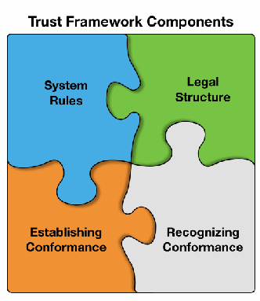
「Trust Framework Components（トラストフレームワークの構成要素）」と題した図です。4つのジグソーパズルのピースがかみ合っており、左上の青に「System Rules（システム規則）」、右上の緑に「Legal Structure（法的構造）」、左下のオレンジに「Establishing Conformance（適合性の確立）」、右下の灰色に「Recognizing Conformance（適合性の認識）」と書かれています。
Figure 3 – Trust Framework Components.
図 3 – トラストフレームワークの構成要素。
The following sections explore these concepts further and explain how these components fit together to support an identity federation.
以下のセクションでは、これらの概念をさらに詳しく検討し、これらの構成要素がどのように組み合わさって ID フェデレーションを支えるかを説明します。
Risk Management & Trust
リスク管理と信頼
Mutual trust among federation members is crucial for identity federation to work. Trust is typically generated through experience and reputation. For example, based on experience, users trust that they can use their debit cards in virtually any ATM and reliably and safely conduct financial transactions in any location. Repeated interactions have demonstrated that debit transactions are executed in a reliable and secure manner, and that when errors do occur they are handled according to established rules and processes. Users generally recognize and make risk evaluations in varying environments, such as when something does not seem right with a retailer or an ATM, and choose not to hand over their card.
フェデレーションのメンバー間の相互信頼は、ID フェデレーションが機能するために不可欠です。信頼は通常、経験と評判を通じて生まれます。たとえば、ユーザーは、経験に基づいて、ほぼどの ATM でもデビットカードを使え、どの場所でも確実かつ安全に金融取引を行えると信頼しています。繰り返しのやり取りによって、デビット取引が信頼性が高く安全な方法で実行されること、そして誤りが生じた場合でも確立されたルールとプロセスに従って処理されることが示されてきました。ユーザーは一般に、小売店や ATM に何か不審な点があるときなど、さまざまな環境でリスクを認識して評価し、カードを渡さないことを選びます。
Identity federations aim to reach similar levels of trust and expectations among members and users; however, it will take some time to build similar experience with online federated systems. To build trust now, identity federations need to identify risks and manage those risks. Current identity federations have accomplished this by clearly articulating the roles and responsibilities of all members and how those responsibilities will be met. Trust frameworks are the means to codify those expectations, typically in the form of rules and agreements.
ID フェデレーションは、メンバーとユーザーの間で同様のレベルの信頼と期待を実現することを目指していますが、オンラインのフェデレーション型システムで同様の経験を築くには、ある程度の時間がかかります。今のうちに信頼を築くには、ID フェデレーションがリスクを特定し、そのリスクを管理する必要があります。現在の ID フェデレーションは、すべてのメンバーの役割と責任、およびそれらの責任がどのように果たされるかを明確に示すことで、これを実現してきました。トラストフレームワークは、これらの期待事項を、通常はルールや協定の形で成文化する手段です。
Because each community operates its online transactions with a unique level of risk tolerance, the elements that go into a trust framework should be selected to address the specific needs of its members. Risk management always involves balancing the costs of risk mitigation and risk tolerance. Trust framework development should be considered as a process that involves fulfilling expectations through risk analysis, risk management, risk tolerance, performance, and experience. Accordingly, identity federations will need to analyze risks to the types of online services that they offer, identify ways to manage those risks, determine the most effective and efficient solutions, and incorporate those solutions in their trust framework.
各コミュニティは、固有のリスク許容度でオンライン取引を運営しているため、トラストフレームワークに盛り込む要素は、そのメンバーの具体的なニーズに対応するように選択すべきです。リスク管理には、リスク低減のコストとリスク許容度とのバランスを取ることが常に伴います。トラストフレームワークの策定は、リスク分析、リスク管理、リスク許容度、パフォーマンス、経験を通じて期待事項を満たしていくプロセスとして捉えるべきです。したがって、ID フェデレーションは、自らが提供するオンラインサービスの種類に対するリスクを分析し、それらのリスクを管理する方法を特定し、最も効果的で効率的な解決策を決定し、それらの解決策をトラストフレームワークに組み込む必要があります。
Fortunately, there are several methodologies available for use in identifying risk profiles of members and determining appropriate rules, legal documentation, and conformance processes for trust frameworks. Regardless of the framework used, the core set of risk management practices must reflect federation participants’ understanding of their risk environment, and specific components must be chosen to mitigate these risks – be they technical, legal, business, or a combination of all three. The following sections present components that are typically addressed in trust frameworks.
幸いなことに、メンバーのリスクプロファイルを特定し、トラストフレームワークに適したルール、法的文書、適合性プロセスを決定するために利用できる方法論がいくつかあります。どのフレームワークを用いるかにかかわらず、リスク管理の中核となる一連のプラクティスは、フェデレーション参加者によるリスク環境の理解を反映していなければならず、技術面、法務面、事業面、またはそのすべての組み合わせのいずれであれ、これらのリスクを低減するために具体的な構成要素を選択しなければなりません。以下のセクションでは、トラストフレームワークで通常取り上げられる構成要素を示します。
![Blue call-out box with a documents icon. Heading: "Risk Management Frameworks & Methodologies include:" Bullets: "NIST’s “Risk Management Framework” (specifically SPs 800-37-1 & 800-53-4)"; "NIST’s “Framework for Improving Critical Infrastructure”"; "ISO 31000:2009, “Risk Management – Principles and Guidelines”"; "NIST’s “Digital Identity Guidelines” (SP-800-63-3)"; "ISO/IEC 29115:2013, “Entity Authentication Assurance Framework”"; "Control Objectives for Information and Related Technologies (COBIT)".](assets/ir-8149/p0014-figure-01.png)
文書のアイコンのある青い囲み枠です。見出しは「Risk Management Frameworks & Methodologies include:（リスクマネジメントのフレームワークと方法論には次のものがあります）」で、箇条書きに「NIST’s “Risk Management Framework” (specifically SPs 800-37-1 & 800-53-4)」「NIST’s “Framework for Improving Critical Infrastructure”」「ISO 31000:2009, “Risk Management – Principles and Guidelines”」「NIST’s “Digital Identity Guidelines” (SP-800-63-3)」「ISO/IEC 29115:2013, “Entity Authentication Assurance Framework”」「Control Objectives for Information and Related Technologies (COBIT)」が並んでいます。
5 System Rules
5 システムルール
A fundamental purpose for building trust frameworks is to define the identity management operations and technical requirements needed to support the identity federation and to clearly assign responsibility for performing those operations. Since federation members expect and need to trust those identity management operations, the identity management operations of the federation are typically presented as requirements or rules. The federation members responsible for performing specific operations are expected to demonstrate conformance with the rule set specific to their role.
トラストフレームワークを構築する基本的な目的は、ID フェデレーションを支えるために必要な ID 管理業務と技術要件を定義し、それらの業務を実施する責任を明確に割り当てることです。フェデレーションのメンバーは、これらの ID 管理業務を信頼することを期待し、またその必要があるため、フェデレーションの ID 管理業務は、通常、要件またはルールとして示されます。特定の業務の実施を担うフェデレーションのメンバーは、自らの役割に固有のルールセットへの適合を示すことが求められます。
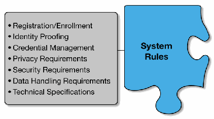
「System Rules（システム規則）」と書かれた青いジグソーパズルのピースに灰色の枠がつながり、枠の中に「Registration/Enrollment（登録）」「Identity Proofing（身元確認）」「Credential Management（クレデンシャル管理）」「Privacy Requirements（プライバシー要件）」「Security Requirements（セキュリティ要件）」「Data Handling Requirements（データ取扱い要件）」「Technical Specifications（技術仕様）」が並んでいます。
5.1 Registration/Enrollment
5.1 登録／エンロールメント
What is Registration?
登録とは何か
Registration, or enrollment, is the process of creating an identity record within an identity management system (IDMS) and associating it with attributes specific to a particular user. Each identity record within an IDMS must be unique, and contain sufficient information from a user to distinguish them from other users managed by the system.
登録（エンロールメント）とは、ID 管理システム（IDMS）内に ID レコードを作成し、特定のユーザーに固有の属性と関連付けるプロセスです。IDMS 内の各 ID レコードは一意でなければならず、そのシステムが管理する他のユーザーと当該ユーザーを区別するのに十分な情報を含んでいなければなりません。
In many cases, ID proofing and registration are closely linked and may occur in the same session. For instance, for registration processes that require an applicant user to appear in-person in front of a registration agent, the identity documents required for ID proofing may be scanned into the system and associated with the user’s identity record.
多くの場合、本人確認と登録は密接に結び付いており、同じセッションで行われることがあります。たとえば、申請者であるユーザーが登録担当者の前に対面で出向くことを求める登録プロセスでは、本人確認に必要な身元確認書類がシステムにスキャンされ、ユーザーの ID レコードに関連付けられることがあります。
Why Should Registration be Included in a Trust Framework?
トラストフレームワークに登録を含めるべき理由
Members of a federation must know what processes and procedures were followed when creating an identity record, including what types of systems were used to capture the results of the ID proofing and how those results are associated with, or bound, to a user.
フェデレーションのメンバーは、ID レコードの作成時にどのようなプロセスと手順が踏まれたかを把握していなければなりません。これには、本人確認の結果を記録するためにどのような種類のシステムが使われたか、またその結果がユーザーとどのように関連付けられ、紐づけられているかが含まれます。
Registration Options, Based on Risk
リスクに基づく登録の選択肢
For lower risk transactions, registration or enrollment may be as simple as asking a new user to create a username and password. Depending on the nature of the services supported by the federation, additional information may be requested, such as mailing addresses, phone numbers, and email addresses. Other factors that may affect registration process requirements include whether an identity federation allows for pseudonymous identities.
リスクの低い取引では、登録またはエンロールメントは、新規ユーザーにユーザー名とパスワードを作成してもらうだけの簡単なものでもかまいません。フェデレーションが支えるサービスの性質によっては、郵送先住所、電話番号、電子メールアドレスなどの追加情報を求めることもあります。登録プロセスの要件に影響しうるその他の要因として、ID フェデレーションが仮名の ID を認めるかどうかがあります。
Federations that operate to mitigate higher levels of risk often require the entities that perform the enrollment process (often referred to as Registrars or Registration Agents) to meet certain requirements before they can be authorized to perform their role, including minimum skills or experience levels and the completion of training on the system. For the highest risk environments, potential Registrars may even be required to pass a background check before they can be “certified” to register users in a system.
より高いレベルのリスクの低減を目的として運営されるフェデレーションでは、エンロールメントプロセスを実施するエンティティ（多くの場合、登録担当者（Registrar）または登録エージェントと呼ばれます）が、その役割を果たす権限を与えられる前に、最低限のスキルや経験のレベル、システムに関するトレーニングの修了など、一定の要件を満たすことを求めることがよくあります。最もリスクの高い環境では、登録担当者の候補者が、システムでユーザーを登録するために「認定」される前に、身元調査に合格することまで求められる場合があります。
Additionally, the amount and types of information captured and associated with a user may vary, depending on the degree of rigor applied within a federation. On the lower end of the spectrum, username and password or unverified demographic information (e.g., mailing addresses, phone numbers, email addresses) may be included in identity records. Where a moderate level of risk is being addressed, that information may need to be validated against authoritative sources. For the highest risk transactions, additional data, such as scanned documentation or biometrics, may be collected during in-person ID proofing. In any case, the only information that should be collected and maintained is the information that is needed for enrollment and subsequent identity proofing processes.
加えて、ユーザーについて記録し関連付ける情報の量と種類は、フェデレーション内で適用される厳格さの度合いによって異なる場合があります。低い側では、ユーザー名とパスワード、または未検証の人口統計情報（たとえば、郵送先住所、電話番号、電子メールアドレス）が ID レコードに含まれることがあります。中程度のリスクに対処する場合は、その情報を信頼できる情報源と照合して検証する必要が生じることがあります。最もリスクの高い取引では、対面での本人確認の際に、スキャンした書類や生体情報などの追加データを収集することがあります。いずれの場合も、収集し保持すべき情報は、エンロールメントとその後の本人確認プロセスに必要な情報のみです。
As in other aspects of an identity federation’s trust framework, decisions must be made and included in the documentation to inform its members as to the degree of rigor, commensurate with a risk profile, its members must apply in performing registration functions.
ID フェデレーションのトラストフレームワークの他の側面と同様に、メンバーが登録機能の実施で適用しなければならない、リスクプロファイルに見合った厳格さの度合いについて、メンバーに周知するために、決定を行い、文書に盛り込まなければなりません。
5.2 Identity Proofing
5.2 本人確認
What is Identity Proofing?
本人確認とは何か
Identity proofing (ID proofing) is the process by which a CSP or registrar collects and verifies information about a person for the purposes of issuing credentials to that person. In other words, it’s how CSPs and registrars require applicants to prove they are who they claim to be.
本人確認（ID proofing）とは、CSP または登録担当者が、ある人物にクレデンシャルを発行する目的で、その人物に関する情報を収集し検証するプロセスです。言い換えれば、CSP や登録担当者が、申請者に、自分が主張するとおりの人物であることを証明させる方法です。
Why Should ID Proofing be Included in a Trust Framework?
トラストフレームワークに本人確認を含めるべき理由
By defining baseline requirements for ID proofing, identity federations set a foundation for their members to trust that users have been vetted to an agreed-upon level prior to being issued a federation credential. Depending on the level of risk associated with a federation, required ID proofing activities can be as simple as verifying an email provided by a user, or as complicated as requiring a user to appear in person in front of a registrar with one or more identity verification documents.
本人確認の基準となる要件を定義することで、ID フェデレーションは、フェデレーションのクレデンシャルが発行される前に、ユーザーが合意されたレベルで審査されているとメンバーが信頼できる基盤を築きます。フェデレーションに関連するリスクのレベルに応じて、必要とされる本人確認活動は、ユーザーが提供した電子メールの確認のような簡単なものから、ユーザーが 1 点以上の本人確認書類を持って登録担当者の前に対面で出向くことを求めるような複雑なものまで、さまざまです。
ID Proofing Options, Based on Risk
リスクに基づく本人確認の選択肢
Identity federations should choose an identity proofing methodology to include in their rule sets, based on the amount of risk associated with their community’s transactions.
ID フェデレーションは、自らのコミュニティの取引に伴うリスクの大きさに基づいて、ルールセットに含める本人確認の方法論を選択すべきです。
•Self-assertion/no identity proofing: For transactions with the lowest associated risks, a CSP can issue an identity credential based on an unverified statement that an individual is who they claim to be. Self-assertion of an identity is appropriate when the resultant credentials consist of a simple user name and password, issued for the purposes of identifying a user across multiple sessions. Identity proofing is also not required for anonymous and pseudonymous transactions.
•自己申告／本人確認なし: 関連するリスクが最も低い取引では、CSP は、個人が自称するとおりの人物であるという未検証の申告に基づいて、ID クレデンシャルを発行できます。ID の自己申告は、複数のセッションにわたってユーザーを識別する目的で発行される、単純なユーザー名とパスワードからなるクレデンシャルの場合には適切です。匿名や仮名の取引でも、本人確認は必要ありません。
•Remote identity proofing: Remote identity proofing is appropriate for moderate-risk environments and requires a user to provide additional evidence in support of their asserted identity through a remote session. This typically involves the collection of information about the user and may include the collection and validation of identity evidence such as driver’s license.
•リモートでの本人確認: リモートでの本人確認は、中程度のリスクの環境に適しており、ユーザーに、リモートセッションを通じて、主張する ID を裏付ける追加の証拠を提示させます。これには通常、ユーザーに関する情報の収集が伴い、運転免許証などの身元確認用証拠の収集と検証が含まれる場合があります。
•In-person identity proofing: In-person proofing is the most rigorous proofing method and is appropriate for higher levels of risk. This proofing method involves an applicant appearing in-person, with supporting evidence of their identity, in front of an authorized registrar for the identity service. Where in-person proofing is not possible, or is prohibitively inconvenient, virtual (or remote) in-person proofing can provide an identity service provider with the same level of confidence in an applicant’s identity as traditional in-person proofing.5
•対面での本人確認: 対面での確認は、最も厳格な本人確認の方法であり、より高いレベルのリスクに適しています。この方法では、申請者が、自分の身元を裏付ける証拠を持って、ID サービスの認可を受けた登録担当者の前に対面で出向きます。対面での確認が不可能な場合や、著しく不便な場合には、仮想（またはリモート）の対面での確認により、ID サービスプロバイダーは、従来の対面での確認と同じレベルの確信を、申請者の ID について得られます。5
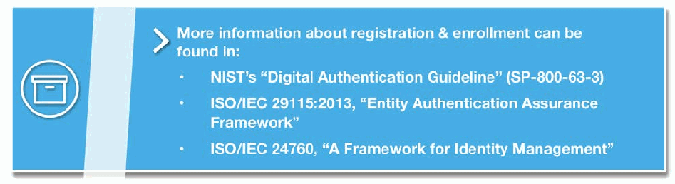
保存箱のアイコンのある青い囲み枠です。見出しは「More information about registration & enrollment can be found in:（登録についての詳しい情報は次にあります）」で、箇条書きに「NIST’s “Digital Authentication Guideline” (SP-800-63-3)」「ISO/IEC 29115:2013, “Entity Authentication Assurance Framework”」「ISO/IEC 24760, “A Framework for Identity Management”」が並んでいます。
5.3 Credential Management
5.3 クレデンシャル管理
What is Credential Management?
クレデンシャル管理とは何か
Credentials are issued as the result of the registration or enrollment activity and are how users assert their identities in order to gain access to online systems and services. Credentials consist of an identifier, which points to a user’s unique record in a record system; an authenticator, or the mechanism by which a user is verified as being the same person who was registered; and any bound attributes, or information about the identity, which may be transmitted by the CSP to an RP. In many cases, the process of issuing a credential is transparent to users, who simply know they were asked to provide some information about themselves and then created, or were provided with, a user name to use when logging into the system.
クレデンシャルは、登録またはエンロールメント活動の結果として発行され、ユーザーがオンラインのシステムやサービスにアクセスするために自分のIDを主張する手段となります。クレデンシャルは、レコードシステム内のユーザーの一意のレコードを指す識別子、ユーザーが登録された本人と同一人物であることを検証するための仕組みである認証器、そしてIDに関する情報でありCSPからRPへ送信されることがある、紐づけられた属性から構成されます。多くの場合、クレデンシャルの発行プロセスはユーザーには見えず、ユーザーは、自分に関する情報の提供を求められ、その後、システムへのログインに使うユーザー名が作成されたか、または与えられたことを知っているだけです。
Credential management, then, is the set of processes a CSP follows during the lifecycle of an identity. Depending on the requirements of a particular identity federation, lifecycle stages may include any or all of the following: credential issuance, updates, renewal, expiration, and revocation.
クレデンシャル管理とは、ID のライフサイクルにわたって CSP が従う一連のプロセスです。特定の ID フェデレーションの要件に応じて、ライフサイクルの段階には、クレデンシャルの発行、変更、更新、有効期限切れ、失効のいずれか、またはすべてが含まれる場合があります。
Why Should Credential Management be Included in a Trust Framework?
トラストフレームワークにクレデンシャル管理を含めるべき理由
Because there are options for how credentials are managed within each stage of the credential management lifecycle, identity federations should consider including the rules and practices its CSPs must follow when issuing and maintaining credentials for use within the federation.
クレデンシャル管理のライフサイクルの各段階には、クレデンシャルの管理方法に選択肢があるため、ID フェデレーションは、フェデレーション内で使用するクレデンシャルを発行し維持する際に CSP が従わなければならないルールとプラクティスを含めることを検討すべきです。
Credential Management Options, Based on Risk
リスクに基づくクレデンシャル管理の選択肢
Trust frameworks can define minimum requirements for any stage of the credential lifecycle, depending on the level of risk mitigation that needs to be achieved. Trust framework system rules may include specific expectations for some or all of the lifecycle stages, as listed above. Higher levels of risk generally include stricter requirements that involve higher costs and effort on the part of the members; however, many identity federations believe this extra burden is warranted in order to maintain the integrity of the identities and support a high level of trust.6
トラストフレームワークは、達成すべきリスク低減のレベルに応じて、クレデンシャルのライフサイクルのどの段階についても最低要件を定義できます。トラストフレームワークのシステムルールには、上記のライフサイクルの段階の一部またはすべてについて、具体的な期待事項を含めることができます。リスクのレベルが高いほど、一般に、メンバーにとってより高いコストと労力を伴う、より厳格な要件が含まれます。しかし、多くの ID フェデレーションは、ID の完全性を維持し、高いレベルの信頼を支えるために、この追加の負担は正当であると考えています。6
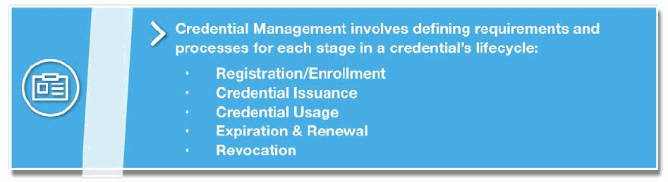
身分証のアイコンのある青い囲み枠です。見出しは「Credential Management involves defining requirements and processes for each stage in a credential’s lifecycle:（クレデンシャル管理では、クレデンシャルのライフサイクルの各段階について要件と処理を定めます）」で、箇条書きに「Registration/Enrollment（登録）」「Credential Issuance（クレデンシャルの発行）」「Credential Usage（クレデンシャルの使用）」「Expiration & Renewal（失効と更新）」「Revocation（取消し）」が並んでいます。
5.4 Privacy Requirements
5.4 プライバシー要件
Trust framework developers should consider including requirements that serve to protect a user’s privacy, including the use of policy and technical controls. In order to select the appropriate controls, a trust framework may also require privacy risk management practices that identify and manage privacy risks in an information system. Some trust frameworks build these privacy-enhancing features into their overall requirements, while others address privacy in a separate document. Either way, a trust framework’s policy for protecting privacy should be clearly articulated in its membership agreements and policy documents, using plain language that is easily accessible to users. Those trust frameworks that place user privacy as a primary concern may even consider including it explicitly in their vision statements and operating rules.
トラストフレームワークの策定者は、ポリシー面と技術面の管理策の使用を含め、ユーザーのプライバシーを保護するための要件を含めることを検討すべきです。適切な管理策を選択するために、トラストフレームワークは、情報システムにおけるプライバシーリスクを特定し管理するプライバシーリスク管理のプラクティスを求めることもあります。トラストフレームワークの中には、こうしたプライバシー強化機能を全体の要件に組み込むものもあれば、プライバシーを別の文書で扱うものもあります。いずれの場合でも、プライバシーを保護するためのトラストフレームワークのポリシーは、メンバーシップ契約やポリシー文書で、ユーザーが容易に参照できる平易な言葉を使って明確に示すべきです。ユーザーのプライバシーを最重要事項とするトラストフレームワークは、それをビジョンステートメントや運用ルールに明記することまで検討できます。
Trust framework developers should also be aware that protecting a user’s privacy goes beyond a single transaction or identity service. Through federated technologies, a CSP could have insight into a range of transactions a user is conducting online across a variety of RPs, building a narrative about a user that the user never anticipated, wanted, or gave explicit consent for the CSP to have. This type of built narrative is called user profiling and, depending on the jurisdiction in which a CSP does business, may be subject to regulation.
トラストフレームワークの策定者は、ユーザーのプライバシーの保護が、単一の取引や ID サービスにとどまらないことにも留意すべきです。フェデレーション技術を通じて、CSP は、ユーザーがさまざまな RP にわたってオンラインで行っている一連の取引を把握でき、ユーザーが想定も希望もしておらず、CSP がそれを持つことに明示的に同意してもいない、そのユーザーに関する物語を構築しかねません。このように構築された物語は、ユーザープロファイリングと呼ばれ、CSP が事業を行う法域によっては、規制の対象となる場合があります。
5.5 Security Requirements
5.5 セキュリティ要件
IT system security is an essential component of any risk reduction and management scheme, and trust framework developers can use the traditional three pillars of IT security (i.e., confidentiality, integrity, and availability) to inform their security-related policies and requirements. Setting expectations of their participants to protect the confidentiality, integrity, and availability of their services sets a foundation for trusted transactions between the parties. As with the other components, the level of risk and potential harm should drive the amount of attention paid to security requirements.
IT システムのセキュリティは、あらゆるリスク低減・管理の仕組みに不可欠な構成要素であり、トラストフレームワークの策定者は、IT セキュリティの従来の 3 つの柱（すなわち、機密性、完全性、可用性）を用いて、セキュリティ関連のポリシーと要件に反映させることができます。参加者に、そのサービスの機密性、完全性、可用性を保護することへの期待事項を定めることは、当事者間の信頼できる取引の基盤となります。他の構成要素と同様に、セキュリティ要件にどの程度の注意を払うかは、リスクのレベルと潜在的な被害によって決まるべきです。
5.6 Data Handling Requirements
5.6 データ取扱い要件
Data handling and usage requirements establish what identity data can be transmitted among member organizations and how that data must be used, managed, and protected. Identity federations should consider setting guidelines and requirements about how their members protect identities, as well as any attributes associated with those identities. As a general rule, keeping the amount of identity data that is exchanged and stored to a minimum helps limit the associated risk and liability.
データの取扱いと利用に関する要件は、メンバー組織間でどの ID データを送信できるか、またそのデータをどのように利用、管理、保護しなければならないかを定めます。ID フェデレーションは、メンバーがアイデンティティと、それに関連付けられた属性をどのように保護するかについて、ガイドラインと要件を定めることを検討すべきです。一般的な原則として、交換し保存する ID データの量を最小限に抑えることは、関連するリスクと責任を抑えるのに役立ちます。
5.7 Technical Specifications
5.7 技術仕様
By identifying a common set of technical protocols and standards, trust frameworks promote the seamless exchange of authentication assertions and identity information among their members. To achieve the greatest level of interoperability, identity federations are encouraged to adopt open standards, which are often more cost-effective and flexible than proprietary solutions.
共通の技術プロトコルと標準を特定することで、トラストフレームワークは、メンバー間での認証アサーションと ID 情報のシームレスな交換を促進します。最大限の相互運用性を実現するために、ID フェデレーションは、独自仕様のソリューションよりも費用対効果と柔軟性が高いことが多いオープンスタンダードを採用することが推奨されます。
At a minimum, a trust framework’s system rules should define protocols and standards for handling the exchange of authentication data and for assessing the strength or validity of an asserted authentication. As with identity proofing, minimum requirements for authentication should be informed by the level of risk associated with the transactions.7
最低限、トラストフレームワークのシステムルールは、認証データの交換の取扱いと、アサートされた認証の強度や有効性の評価のためのプロトコルと標準を定義すべきです。本人確認と同様に、認証の最低要件は、取引に伴うリスクのレベルに基づいて決めるべきです。7
6 Legal Structure
6 法的構造
Trust frameworks present the operational and technical requirements for federated identity management, and must also provide the legal basis to bind those requirements to federation members. Identity federation members voluntarily agree to participate in the federation and follow the trust framework rules. While there are varying means to bind members to federation rules, the most straightforward, common method is through a contract or agreement. Members become legally bound to the trust framework rules through signed agreements to comply with the operational and technical rules as well as the legal rules, rights, and obligations of federation members. Therefore, trust frameworks and associated member agreements form a contract-based legal structure that applies to all federation members. This legal obligation is critical for providing the assurance and trust for the federated identity system.
トラストフレームワークは、フェデレーション型 ID 管理の運用面と技術面の要件を示すとともに、それらの要件をフェデレーションのメンバーに拘束させる法的根拠も備えていなければなりません。ID フェデレーションのメンバーは、自発的にフェデレーションへの参加とトラストフレームワークのルールの遵守に同意します。メンバーをフェデレーションのルールに拘束させる手段はさまざまですが、最も簡単で一般的な方法は、契約または協定によるものです。メンバーは、運用面と技術面のルール、およびフェデレーションのメンバーの法的ルール、権利、義務を遵守するという署名入りの協定を通じて、トラストフレームワークのルールに法的に拘束されます。したがって、トラストフレームワークと関連するメンバー協定は、すべてのフェデレーションメンバーに適用される、契約に基づく法的構造を形成します。この法的義務は、フェデレーション型 ID システムに保証と信頼をもたらすうえで不可欠です。
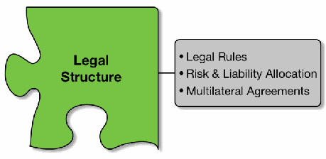
「Legal Structure（法的構造）」と書かれた緑のジグソーパズルのピースに灰色の枠がつながり、枠の中に「Legal Rules（法的規則）」「Risk & Liability Allocation（リスクと責任の配分）」「Multilateral Agreements（多者間合意）」が並んでいます。
6.1 Trust Framework Legal Rules
6.1 トラストフレームワークの法的ルール
Trust frameworks are created within the context of public laws that apply within the jurisdiction of federation operations. Public laws established through statutes, regulations, and common law will apply to federated management operations and systems that operate within their jurisdiction; applicable general laws such as contract law, tort law, and business law are a small sample. Some public laws regulate activities that will directly apply to identity management systems. For example, public laws regulating information privacy and data protection of personal information will apply to identity management systems and operations (e.g., Federal Trade Commission Act, Fair Credit Reporting Act, and the European Union General Data Protection Regulation). Public laws and rules may also apply to specific types of federation communities and transactions, for instance:
トラストフレームワークは、フェデレーションの運営に適用される法域の公法の文脈の中で作られます。制定法、規則、コモンローによって定められた公法は、その法域内で運用されるフェデレーション型管理の運営とシステムに適用されます。契約法、不法行為法、商法などの適用される一般法は、そのほんの一例です。公法の中には、ID 管理システムに直接適用される活動を規制するものもあります。たとえば、情報プライバシーや個人情報のデータ保護を規制する公法は、ID 管理システムとその運用に適用されます（例: Federal Trade Commission Act、Fair Credit Reporting Act、欧州連合の一般データ保護規則）。公法や規則は、特定の種類のフェデレーションコミュニティや取引にも適用されることがあります。たとえば次のようなものです。
•The Child Online Privacy Protection Act (COPPA) regulates privacy protections for online service providers directed to children under 13 years of age;
•Child Online Privacy Protection Act（COPPA）は、13 歳未満の子供を対象とするオンラインサービスプロバイダーに対するプライバシー保護を規定しています。
•The Financial Services Modernization Act (Gramm-Leach-Bliley Act) regulates the collection, use, and disclosure of financial information for financial institutions such as banks, securities firms, and insurance companies, and to other businesses that provide financial services and products; and
•Financial Services Modernization Act（Gramm-Leach-Bliley Act）は、銀行、証券会社、保険会社などの金融機関や、金融サービスおよび金融商品を提供するその他の事業者による、金融情報の収集、利用、開示を規制しています。また
•The Health Insurance Portability and Accountability Act (HIPAA) regulates medical information and applies broadly to health care providers, data processors, pharmacies and other entities that come into contact with medical information.
•Health Insurance Portability and Accountability Act（HIPAA）は、医療情報を規制しており、医療提供者、データ処理事業者、薬局、その他の医療情報に接する事業体に広く適用されます
Trust framework administrators need to be aware of and understand the impacts of applicable public laws on federation members and operations when creating trust framework rules, as well as on an ongoing basis to manage and maintain trust framework rules. Obviously, those rules must be in compliance with applicable existing and emerging public laws. This is particularly important given the scope of online commerce and services and the potential for international, cross-jurisdictional business, and identity federation.
トラストフレームワークの管理者は、トラストフレームワークのルールを作成する際はもちろん、継続的にそれらを管理し維持する際にも、適用される公法がフェデレーションのメンバーと運営に与える影響を認識し、理解している必要があります。当然ながら、それらのルールは、適用される既存および新たに生じる公法に準拠していなければなりません。これは、オンライン取引やサービスの規模、そして国際的で法域をまたぐ事業や ID フェデレーションの可能性を考えると、特に重要です。
Legal rules bind federation members to all trust framework rules and requirements, present the responsibilities and obligations of all members to each other, and clarify any administrative or legal aspects involved in their participation in the federation. These may include any warranties for goods and services, compliance requirements beyond the operational and technical requirements, and enforcement mechanisms for non-compliance. Trust framework legal rules also typically provide means and processes for dispute resolution between federation members through administrative processes, rather than court action.
法的ルールは、フェデレーションのメンバーをトラストフレームワークのすべてのルールと要件に拘束し、すべてのメンバーが互いに負う責任と義務を示し、フェデレーションへの参加に伴う管理面または法的な側面を明確にします。これには、物品やサービスの保証、運用面・技術面の要件を超える遵守要件、不遵守に対する執行の仕組みなどが含まれることがあります。トラストフレームワークの法的ルールはまた、通常、フェデレーションのメンバー間の紛争を、裁判ではなく管理上のプロセスによって解決する手段とプロセスを備えています。
6.2 Risk & Liability Allocation
6.2 リスクと責任の配分
A consideration for trust framework legal rules is the allocation of risk and liability of federation members. Authentication transactions involve data exchanges between a user, an RP, and a CSP. There are potential risks to the successful execution of these transactions and subsequent access authorizations that may present risks to any of the parties involved. For example, the CSP may have erred in the enrollment information or credentialing of the user, users may be denied service due to a disruption in system services, or relying parties may have allowed unauthorized access to protected resources due to identity theft or fraud. The result of any of these circumstances is that a federation member or user may feel that they have suffered a loss (e.g., financial, exposure of personal information, exposure of restricted resources). In any of the federation operations, there exists a risk that something may go wrong, resulting in potential or actual losses to any of the federation members.
トラストフレームワークの法的ルールで考慮すべき事項の一つが、フェデレーションのメンバーのリスクと責任の配分です。認証トランザクションには、ユーザー、RP、CSP の間でのデータ交換が伴います。これらのトランザクションとその後のアクセス認可を無事に実行するうえでは、潜在的なリスクがあり、関係するいずれの当事者にもリスクをもたらしかねません。たとえば、CSP がエンロールメント情報やユーザーへのクレデンシャル発行を誤ることがあります。システムサービスの中断によってユーザーがサービスを受けられなくなることもあります。依拠当事者が、なりすましや詐欺により、保護されたリソースへの不正なアクセスを許してしまうこともあります。これらのいずれの状況でも、フェデレーションのメンバーやユーザーは、損失（たとえば、金銭的損失、個人情報の漏えい、制限されたリソースの漏えい）を被ったと感じる可能性があります。フェデレーションのどの運営においても、何かがうまくいかず、フェデレーションのいずれのメンバーにも潜在的または実際の損失が生じるリスクがあります。
The general rule is that the party affected by the loss will bear the loss, unless the liability for the loss is allocated to another party.8 However, liability losses are a zero-sum equation; that is, allocating liability does not reduce total loss, it simply allocates responsibility for losses to a particular party. Trust framework administrators may create legal rules to allocate risk and liability for various reasons; typically risk and liability allocation have been used to ensure an equitable allocation among federation members.
一般原則として、損失の責任が他の当事者に配分されていない限り、損失の影響を受けた当事者がその損失を負担します。8 しかし、責任に伴う損失はゼロサムの式であり、つまり、責任を配分しても総損失は減らず、特定の当事者に損失の責任を割り当てるだけです。トラストフレームワークの管理者は、さまざまな理由でリスクと責任を配分する法的ルールを作成することがあります。通常、リスクと責任の配分は、フェデレーションのメンバー間での公平な配分を確保するために用いられてきました。
Furthermore, the objective of the allocation of risk and liability may be to ensure the participation or protection of a category of system participants that is critical to the federation. An example of such risk and liability allocation in industry is the limitation on personal account liability for losses occurring through electronic funds transfer. In this case, liability may be allocated to the card-issuing financial institution under certain circumstances (i.e., Electronic Funds Transfer Act, Federal Reserve Regulation E).
さらに、リスクと責任の配分の目的は、フェデレーションにとって重要なシステム参加者の区分の参加や保護を確保することにある場合もあります。業界におけるこのようなリスクと責任の配分の例が、電子資金移動を通じて生じた損失に対する個人口座の責任の制限です。この場合、一定の状況では、責任がカードを発行した金融機関に配分されることがあります（すなわち、Electronic Funds Transfer Act、連邦準備制度理事会の Regulation E）。
6.3 Multilateral Agreements
6.3 多者間協定
The principal purpose of trust framework legal rules is to bind the applicable operational, technical and legal rules and requirements to all federation members. Federation trust and reliance on identity management operations will not be achieved without clear commitment of all members to comply with trust framework rules. This commitment is achieved through executing legally-binding agreements among all federation members. Individual bilateral agreements could be executed between sets of parties within a smaller federation, but such an arrangement would be cumbersome, costly, and jeopardize federation trust since there would be no assurance all parties were agreeing to the same rules.
トラストフレームワークの法的ルールの主な目的は、適用される運用面、技術面、法的なルールと要件を、すべてのフェデレーションメンバーに拘束させることです。すべてのメンバーがトラストフレームワークのルールを遵守するという明確な約束がなければ、ID 管理業務に対するフェデレーションの信頼と依拠は実現しません。この約束は、すべてのフェデレーションメンバー間で法的拘束力のある協定を締結することによって実現されます。規模の小さいフェデレーションであれば、当事者の組み合わせごとに個別の二者間協定を結ぶことも可能ですが、そのような取り決めは煩雑で費用がかかるうえ、すべての当事者が同じルールに同意しているという保証がないため、フェデレーションの信頼を損ないます。
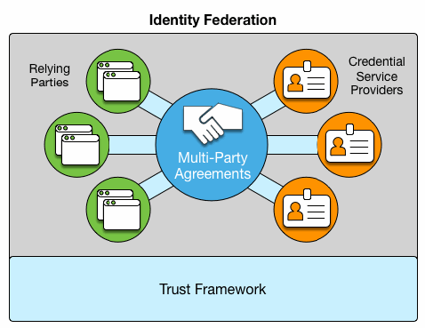
「Identity Federation（アイデンティティ連携）」と題した図です。中央の握手のアイコンのある青い円「Multi-Party Agreements（多者間合意）」が、左の3つの緑の「Relying Parties（依拠当事者）」のアイコンと、右の3つのオレンジの「Credential Service Providers（クレデンシャルサービスプロバイダー）」のアイコンにつながっています。全体は「Trust Framework（トラストフレームワーク）」と書かれた水色の土台の上にあります。
Common multilateral agreements typically bind federation members to the applicable operational, technical and legal rules of the federation and present the same terms, rules and requirements for all federation members. The specific requirements and responsibilities for credential service providers and relying parties are applicable to those specific roles, but are clearly presented for all members. Multilateral agreements streamline the process, allow the federation to scale, and enable each participant to easily see and understand the roles, responsibilities, and obligations of the other federation members. Multilateral agreements will also provide assurance that all members are bound to the same common enforcement mechanism of a legally binding agreement with common terms. The multi-party agreement should incorporate all relevant rules and requirements either directly or by reference, if presented via separate document(s).
共通の多者間協定は、通常、フェデレーションのメンバーを、フェデレーションに適用される運用面、技術面、法的なルールに拘束し、すべてのフェデレーションメンバーに同じ条件、ルール、要件を示します。クレデンシャルサービスプロバイダーと依拠当事者に対する具体的な要件と責任は、それぞれの役割に適用されますが、すべてのメンバーに明確に示されます。多者間協定は、プロセスを合理化し、フェデレーションの拡大を可能にし、各参加者が他のフェデレーションメンバーの役割、責任、義務を容易に把握し理解できるようにします。多者間協定はまた、すべてのメンバーが、共通の条件を持つ法的拘束力のある協定という共通の執行の仕組みに拘束されることを保証します。多者間協定には、関連するすべてのルールと要件を、直接、または別の文書で示される場合は参照によって盛り込むべきです。
7 Establishing Conformance
7 適合性の確立
Establishing and enforcing conformance among its members to its set of agreements and operating rules is vital to an identity federation’s functioning. Conformance is the degree to which a federation member has implemented, and is adhering to, the rules of the federation. The amount of rigor, and therefore burden, an identity federation requires of its participants in demonstrating conformance to its trust framework should be commensurate with the degree of risk it is designed to address. Frameworks that accommodate different kinds of transactions, with differing amounts of risk, may choose to offer multiple levels of conformance based on a graduated set of rules and requirements. This section provides options a Federation Administrator may consider when defining how they will establish conformance among its members.
メンバーに対して、一連の協定と運用ルールへの適合性を確立し、強制することは、ID フェデレーションの機能にとって不可欠です。適合性とは、フェデレーションのメンバーがフェデレーションのルールをどの程度実装し、遵守しているかの度合いです。ID フェデレーションが、参加者にトラストフレームワークへの適合性を示すよう求める厳格さの度合い、ひいては負担の度合いは、そのフェデレーションが対処しようとするリスクの度合いに見合ったものであるべきです。リスクの大きさが異なるさまざまな種類の取引に対応するフレームワークは、段階的なルールと要件に基づいて、複数の適合性のレベルを提供することを選択できます。本セクションでは、フェデレーション管理者が、メンバーに対する適合性の確立方法を定める際に検討できる選択肢を示します。
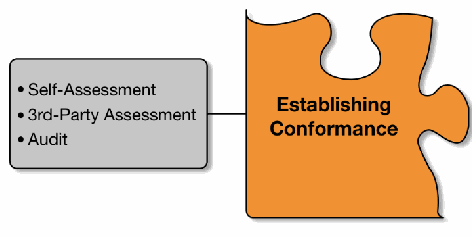
「Establishing Conformance（適合性の確立）」と書かれたオレンジのジグソーパズルのピースに灰色の枠がつながり、枠の中に「Self-Assessment（自己評価）」「3rd-Party Assessment（第三者評価）」「Audit（監査）」が並んでいます。
7.1 Self-assessment
7.1 自己評価
What is a Self-assessment?
自己評価とは何か
A self-assessment is the process by which a member organization (CSP or RP) evaluates its processes and systems against the stated requirements of a trust framework and is the simplest way for a member to demonstrate conformance within an identity federation. Used primarily in low and medium risk environments, self-assessments can often be completed using in-house resources and, therefore, impose a lower administrative burden on the member organization.
自己評価とは、メンバー組織（CSP または RP）が、自らのプロセスとシステムを、トラストフレームワークで示された要件に照らして評価するプロセスであり、メンバーが ID フェデレーション内で適合性を示す最も簡単な方法です。主に低リスクおよび中リスクの環境で用いられ、自己評価は、多くの場合、社内の資源で完了できるため、メンバー組織にかかる管理上の負担が小さくなります。
Trust frameworks often have a process by which members can conduct their self-assessments and may set requirements for the degree to which all requirements must be met in order operate within the parameters of the federation.
トラストフレームワークには、メンバーが自己評価を実施できるプロセスがあることが多く、フェデレーションの枠内で運営するために、すべての要件をどの程度満たす必要があるかを定めている場合もあります。
Upon completion of the assessment against requirements and standards, the trust framework may require member organizations to attest to their assessed conformance to the requirements of the trust framework.
要件と標準に照らした評価が完了すると、トラストフレームワークは、メンバー組織に対し、評価によって確認されたトラストフレームワークの要件への自らの適合性を証明（アテステーション）するよう求めることがあります。
When Should They be Used?
どのような場合に使用すべきか
Self-assessment is an effective and efficient means to provide assurance that federation members conform to the rules and requirements of the trust framework. Self-assessment should be considered when federation members expect or require greater assurance than a signed agreement in order to build trust amongst all members. Self-assessment processes require assignment of staff resources, but since the resources are internal to the organization, the assessment processes can be planned and executed efficiently to minimize overall impact. Efficiency and higher assurance are key considerations for establishing self-assessment conformance requirements.
自己評価は、フェデレーションのメンバーがトラストフレームワークのルールと要件に適合していることの保証を提供する、有効かつ効率的な手段です。自己評価は、すべてのメンバー間で信頼を築くために、フェデレーションのメンバーが署名入りの協定よりも高い保証を期待する、または求める場合に検討すべきです。自己評価のプロセスには要員の割り当てが必要ですが、その資源は組織内部のものであるため、評価プロセスを効率的に計画・実行して、全体への影響を最小限に抑えることができます。効率性と、より高い保証は、自己評価による適合性要件を確立するうえでの重要な考慮事項です。
7.2 Third-Party Assessment
7.2 第三者評価
What is a Third-Party Assessment?
第三者評価とは何か
For federations that require higher levels of trust amongst their members, third-party assessments provide the means for members to demonstrate their adherence to the federation’s operating rules. As the name indicates, third-party assessment arrangements involve independent entities trained and certified to perform assessments of requirements for a specific community or trust framework. Federation members may employ certified assessors to evaluate their systems and services against the framework’s requirements and assessment criteria. It is typical for third-party assessors to provide a notice, or attestation of conformance, to the trust framework’s rules on behalf of the service provider.
メンバー間でより高いレベルの信頼を必要とするフェデレーションでは、第三者評価が、メンバーがフェデレーションの運用ルールの遵守を示す手段となります。その名のとおり、第三者評価の取り決めには、特定のコミュニティまたはトラストフレームワークの要件の評価を行うための訓練を受け認定された、独立したエンティティが関与します。フェデレーションのメンバーは、認定された評価者を雇い、自らのシステムとサービスを、フレームワークの要件と評価基準に照らして評価させることができます。第三者評価者が、サービスプロバイダーに代わって、トラストフレームワークのルールへの適合性の通知、すなわち適合性の証明（アテステーション）を提供するのが一般的です。
When Should They be Used?
どのような場合に使用すべきか
Independent, third-party assessments are required when a higher level of assurance is needed to demonstrate conformance among federation members, or when there is little tolerance for operational risk. As with most risk mitigation strategies, higher assurance, with resultant lower risk, will result in higher burdens. The planning, contracting and execution of third-party assessments will result in higher costs than self-assessments, so the need and member expectations for greater assurance must be justified. Third-party assessments must meet established federation standards, and the results can be relied upon with a higher level of assurance.
独立した第三者評価は、フェデレーションのメンバー間で適合性を示すためにより高い保証レベルが必要な場合、または運用リスクの許容範囲がほとんどない場合に必要とされます。ほとんどのリスク低減戦略と同様に、より高い保証を得て、結果としてリスクを下げるには、より高い負担がかかります。第三者評価の計画、契約、実施には、自己評価よりも高いコストがかかるため、より高い保証が必要であること、およびメンバーがそれを期待していることには、正当な理由がなければなりません。第三者評価は、確立されたフェデレーションの標準を満たさなければならず、その結果は、より高い保証レベルで依拠できます。
If applicable, each identity federation should define the training and certification requirements for its third-party assessors based on the needs of its participants.
該当する場合、各 ID フェデレーションは、参加者のニーズに基づいて、第三者評価者に対する訓練と認定の要件を定めるべきです。
7.3 Audit
7.3 監査
What are Audits?
監査とは何か
Audits are a standardized method for evaluating conformance to requirements and, because of their higher burdens and costs, are generally only used when federation participants are subject to governmental or other regulations. Auditors are typically certified to meet established requirements of audit organizations. Independent audits may be required to ensure an identity federation member is conforming, often both technically and procedurally, to a trust framework when high assurance/low risk tolerance are needed and the federation does not provide for the certification of third-party assessors. A framework that requires audits as a means of acknowledging and enforcing conformance often defines the specific roles and responsibilities associated with the auditors and the auditees and identifies consequences should the responsibilities not be met.
監査は、要件への適合性を評価する標準化された方法であり、負担とコストが高いため、通常は、フェデレーションの参加者が政府その他の規制の対象となる場合にのみ用いられます。監査人は通常、監査組織の確立された要件を満たすよう認定されています。高い保証や低いリスク許容度が必要で、フェデレーションが第三者評価者の認定を設けていない場合には、ID フェデレーションのメンバーがトラストフレームワークに、多くの場合は技術面と手続面の両方で適合していることを確保するために、独立した監査が求められることがあります。適合性を承認し強制する手段として監査を求めるフレームワークは、多くの場合、監査人と被監査者に関する具体的な役割と責任を定め、その責任が果たされなかった場合の結果を明らかにします。
In addition to defining how audits must be conducted, identity federations may include in their framework documentation when and how often members should be audited in order to ensure their continued conformance to the framework’s rules and requirements.
監査をどのように実施しなければならないかを定めることに加え、ID フェデレーションは、メンバーがフレームワークのルールと要件に継続して適合していることを確保するために、メンバーをいつ、どのくらいの頻度で監査すべきかを、フレームワークの文書に含めることがあります。
As noted for third-party assessments, it is typical for auditors to provide a notice or attestation of conformance to the trust framework rules on behalf of the audited service provider.
第三者評価について述べたとおり、監査人が、監査を受けたサービスプロバイダーに代わって、トラストフレームワークのルールへの適合性の通知または証明（アテステーション）を提供するのが一般的です。
When Should They be Used?
どのような場合に使用すべきか
Identity federations that require their members to undergo audits usually do so because the federation operates within an industry that is subject to regulatory or statutory oversight. The burden on its members is high, but so is the potential harm associated with either not complying with the requirements, or with a compromise of users’ privacy or security. In fact, in many cases, industries that are subject to these conditions will often proactively form an identity federation to provide a standardized method for its members to meet the requirements.
メンバーに監査の受審を求める ID フェデレーションは、通常、そのフェデレーションが、規制や法令による監督の対象となる業界で運営されているために、そうしています。メンバーの負担は大きいものの、要件を遵守しないこと、またはユーザーのプライバシーやセキュリティが侵害されることに伴う潜在的な被害も大きくなります。実際、多くの場合、これらの条件の対象となる業界は、メンバーが要件を満たすための標準化された方法を提供するために、自ら進んで ID フェデレーションを形成します。
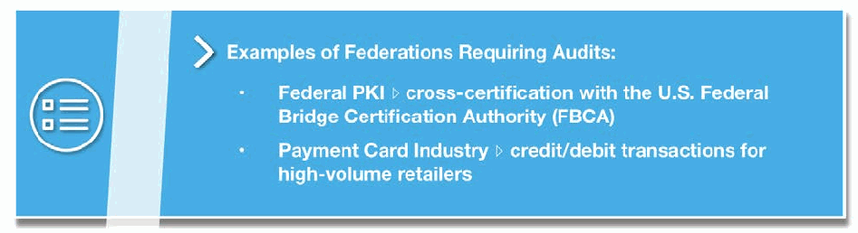
一覧のアイコンのある青い囲み枠です。見出しは「監査を求めるフェデレーションの例：」で、箇条書きに「Federal PKI ▹ 米国連邦ブリッジ認証局（FBCA）とのクロス認証」「Payment Card Industry ▹ 大量取引を行う小売業者のクレジット／デビット取引」が並んでいます。
8 Recognizing & Communicating Conformance
8 適合性の承認と伝達
Conformance recognition is the process by which identity federations enable their participants to communicate alignment with the technical rules and legal stipulations of the framework. It is done only after completion of the selected conformance testing process.
適合性の承認とは、ID フェデレーションが、参加者に、フレームワークの技術的ルールと法的規定への整合を伝達できるようにするプロセスです。これは、選択された適合性テストのプロセスが完了した後にのみ行われます。
In addition to establishing trust among their members, trust frameworks must also be able to support the communication and recognition of conformance. There are many ways this can be achieved, ranging in complexity from a simple registry or listing service, to trustmarks and digital certificates. There are even emerging approaches that seek to express federation conformance through dynamic and machine-readable mechanisms to allow for real-time federation.
トラストフレームワークは、メンバー間で信頼を確立することに加え、適合性の伝達と承認を支えられなければなりません。これを実現する方法は数多くあり、単純なレジストリやリスティングサービスから、トラストマークやデジタル証明書まで、複雑さはさまざまです。リアルタイムのフェデレーションを可能にするため、動的で機械可読な仕組みによってフェデレーションへの適合性を表現しようとする、新たな手法さえあります。
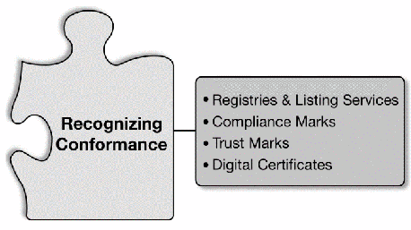
「Recognizing Conformance」と書かれた灰色のジグソーパズルのピースに灰色の枠がつながり、枠の中に「Registries & Listing Services」「Compliance Marks」「Trust Marks」「Digital Certificates」が並んでいます。
Not all mechanisms are appropriate or necessary for every community, nor are they mutually exclusive. As with most aspects of trust framework development, the selection of an appropriate conformance recognition program and mechanism requires close coordination with community members and a sound understanding of constituent needs. When considering which mechanism is the most appropriate for a trust framework, it is important to take into account the following considerations:
すべての仕組みがあらゆるコミュニティに適切または必要というわけではなく、また互いに排他的でもありません。トラストフレームワークの策定のほとんどの側面と同様に、適切な適合性承認プログラムと仕組みを選択するには、コミュニティのメンバーとの緊密な連携と、構成員のニーズの確かな理解が必要です。トラストフレームワークにとってどの仕組みが最も適切かを検討する際には、次の点を考慮することが重要です。
•The scalability and cost of implementing a recognition mechanism;
•承認の仕組みを実装する際のスケーラビリティとコスト
•The size of federation membership, and amount of turnover among members;
•フェデレーションのメンバーシップの規模と、メンバーの入れ替わりの頻度
•The technical maturity of framework participants and the federation administrator;
•フレームワークの参加者とフェデレーション管理者の技術的成熟度
•The sensitivity and security requirements associated with the operating environment;
•運用環境に関連する機微性とセキュリティ要件
•Alignment with rigor of conformance evaluation; and
•適合性評価の厳格さとの整合
•Governance and management capabilities of the community.
•コミュニティのガバナンスと管理の能力
8.1 Registries & Listing Services
8.1 レジストリとリスティングサービス
What are Registries & Listing Services
レジストリとリスティングサービスとは何か
The most basic and straightforward of recognition mechanisms, registries and listing services offer a scalable and easily implemented solution to communicate and discover services which have been deemed compliant with rules and requirements. These may be as straightforward as a hosted website with approved services and information about their conformance. The sophistication of the implementation, level of detail provided on the listed service providers, and search and discovery capabilities are all easily tailored based on the needs of the identity federation. Likewise, the cost and resources required to build and stand-up such a service are relatively limited and directly tied to the sophistication required to meet community needs.
最も基本的で分かりやすい承認の仕組みであるレジストリとリスティングサービスは、ルールと要件に適合しているとみなされたサービスを伝達し、発見するための、スケーラブルで容易に実装できるソリューションを提供します。これは、適合していると認められたサービスと、その適合性に関する情報を掲載した、ホストされた Web サイトのように単純なものでもかまいません。実装の高度さ、掲載されたサービスプロバイダーについて提供される詳細の水準、検索・発見の機能は、いずれも ID フェデレーションのニーズに基づいて容易に調整できます。同様に、このようなサービスを構築し立ち上げるために必要なコストと資源は比較的限られており、コミュニティのニーズを満たすために必要な高度さに直結します。
Along with the limited cost of implementation and high scalability, there are some additional considerations for the use of registries to present compliant services. Registries require framework participants to actively seek out and identify compliant services. Registries may offer listed organizations only limited opportunity to market and advertise framework compliance since the format and content is often standardized. Aside from pointing to the registration service through (ideally) approved messaging, there are limitations for services to directly convey compliance from their own properties. As with the discovery issues addressed above, this also requires RPs or potential users to actively seek out the registry and confirm the services’ listed status.
実装コストが限られ、スケーラビリティが高いことに加え、レジストリを使って適合しているサービスを示す場合には、いくつかの追加の考慮事項があります。レジストリでは、フレームワークの参加者が、適合しているサービスを自ら探し出して特定する必要があります。レジストリでは、形式と内容が標準化されていることが多いため、掲載された組織がフレームワークへの適合を売り込んだり宣伝したりする機会が限られる場合があります。（理想的には）承認されたメッセージを通じてレジストリサービスを案内する以外に、サービスが自らのウェブサイトなどで適合性を直接伝えることには限界があります。上記の発見に関する課題と同様に、これは、RP や潜在的なユーザーが、自らレジストリを探し出し、サービスの掲載状況を確認する必要があることも意味します。
When Should They be Used?
どのような場合に使用すべきか
Registries for compliant organizations can be used for any type of federation, but are most typically used where self-declaration or self-assessment is used to determine compliance with federation rules. In this way, compliant services can be publicly listed for all federation members and for the public in a simple, straightforward manner. There should be alignment between the rigor of the compliance evaluation process and the type of conformance recognition mechanism or program that is put in place. Registries, when used independently, are most appropriate for programs that implement low-cost and self-assessed processes. Similarly, registries offer a scalable, low-cost means to convey information about compliant organizations with low overhead and maintenance for the federation administrator.
適合している組織のレジストリは、どの種類のフェデレーションにも利用できますが、最も一般的には、フェデレーションのルールへの適合性を、自己宣言または自己評価で判断する場合に用いられます。このようにすれば、適合しているサービスを、すべてのフェデレーションメンバーと一般の人々に、簡単で分かりやすい方法で公開掲載できます。適合性評価プロセスの厳格さと、導入される適合性承認の仕組みやプログラムの種類との間には、整合性があるべきです。レジストリを単独で使用する場合は、低コストで自己評価によるプロセスを実施するプログラムに最も適しています。同様に、レジストリは、フェデレーション管理者にとって運用負荷と保守の手間が小さい、適合している組織に関する情報を伝達するための、スケーラブルで低コストな手段を提供します。
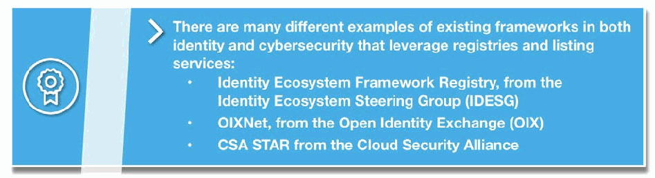
記章のアイコンのある青い囲み枠です。見出しは「アイデンティティとサイバーセキュリティの両方で、レジストリやリスティングサービスを活用している既存フレームワークの例は数多くあります：」で、箇条書きに「Identity Ecosystem Framework Registry, from the Identity Ecosystem Steering Group (IDESG)」「OIXNet, from the Open Identity Exchange (OIX)」「CSA STAR from the Cloud Security Alliance」が並んでいます。
8.2 Compliance Marks
8.2 コンプライアンスマーク
What are Compliance Marks?
コンプライアンスマークとは何か
Often used to augment a registry listing to make marketing and discovery of compliant services more effective, a compliance mark is a visually recognizable mark that can be placed on the web properties and communication materials of compliant framework participants. These can—and in most cases should—be further supported by electronic verification capabilities.
コンプライアンスマークは、適合しているサービスの宣伝と発見をより効果的にするため、レジストリへの掲載を補完する目的でよく使用されます。適合しているフレームワーク参加者の Web プロパティやコミュニケーション資料に掲示できる、視覚的に認識しやすいマークです。これらは電子的な検証機能によってさらに支えることができ、ほとんどの場合、そうすべきです。
When Should They be Used?
どのような場合に使用すべきか
Implementing compliance marks carries very little technical burden for framework participants because, even when augmented by electronic verification, it requires little more than adding an image and URL to a website, yet they do carry an overhead burden for the federation administrators. Compliance marks are trademarked and legally -protected images that require appropriate documentation to be put in place by the federation administrator. The documentation ensures that they are registered with responsible national or international authorities (e.g., U.S. Patent and Trademark Office) and that the terms for their use are properly documented and agreed to by all participants.
コンプライアンスマークの導入は、電子的な検証機能で補完する場合でも、Web サイトに画像と URL を追加する程度で済むため、フレームワーク参加者にとって技術的な負担はごくわずかです。しかし、フェデレーション管理者にとっては、運用上の負担になります。コンプライアンスマークは、商標登録され法的に保護された画像であり、フェデレーション管理者が適切な文書を整備する必要があります。この文書により、マークが責任ある国内または国際機関（たとえば、米国特許商標庁）に登録されること、および使用条件が適切に文書化され、すべての参加者に同意されることが確保されます。
Establishing terms of use and ensuring proper compliance mark registration are short term, typically one-time tasks. Continuing to protect the integrity of the mark and the reputation of the framework, however, requires the federation administrator or other delegated authority to monitor the mark’s use, detect fraudulent or inappropriate applications, and initiate action to remediate any infractions. While internal mark misuse, for example a framework participant posting a modified or incorrect mark, can often be handled through the core legal and enforcement mechanisms described in Section 5 of this document, addressing external misuse presents far greater challenges. In addition to establishing processes to detect misuse (e.g., reporting capabilities, web-crawling applications), the federation administrator would also need to have the capability to take appropriate legal action against parties fraudulently using a mark (i.e., effective take down remedies).
使用条件を定め、コンプライアンスマークを適切に登録することは、短期的な、通常は一度きりの作業です。しかし、マークの完全性とフレームワークの評判を守り続けるには、フェデレーション管理者またはその他の委任された権限者が、マークの使用を監視し、不正または不適切な使用を検知し、違反を是正する措置を開始する必要があります。内部でのマークの不正使用、たとえばフレームワーク参加者が改変された、または誤ったマークを掲示する場合は、本書のセクション 5 で説明した中核的な法的・執行の仕組みで対処できることが多いものの、外部での不正使用への対処ははるかに大きな課題をもたらします。不正使用を検知するプロセス（たとえば、報告機能、Web クローリングアプリケーション）を整備することに加え、フェデレーション管理者は、マークを不正に使用している当事者に対して適切な法的措置を取る能力（すなわち、効果的な削除措置）も備えている必要があります。
Electronically verifiable marks, for example those that have an embedded URL linked to a registry or listing, make the management and protection of compliance marks easier and enable users to more effectively detect fraudulent representations. This can enhance trust and improve discovery in a framework by enabling a community’s participants to more easily identify approved service providers.9
電子的に検証できるマーク、たとえばレジストリやリスティングにリンクされた URL が埋め込まれたマークは、コンプライアンスマークの管理と保護を容易にし、ユーザーが不正な表示をより効果的に検知できるようにします。これにより、コミュニティの参加者が承認されたサービスプロバイダーをより容易に識別できるようになり、フレームワークにおける信頼を高め、発見を改善できます。9
［組織・プログラムのロゴ。ロゴのため、この非公式サイトには掲載していません。原本 PDF を参照してください。］
Generally speaking, the discovery and marketing value that compliance marks bring to the table makes them very valuable to frameworks and their participants—as long as a trust framework administrator is sufficiently able to institute and protect its compliance mark.
一般に、コンプライアンスマークがもたらす発見と宣伝の価値は、トラストフレームワークの管理者がコンプライアンスマークを導入し、保護する十分な能力を備えている限り、フレームワークとその参加者にとって非常に価値のあるものとなります。
8.3 Trustmarks
8.3 トラストマーク
What are Trustmarks?
トラストマークとは何か
Like compliance marks, trustmarks are a visual indication that a service provider is compliant with a federation’s requirements.
コンプライアンスマークと同様に、トラストマークは、サービスプロバイダーがフェデレーションの要件に適合していることを視覚的に示すものです。
Trustmarks comprise a very specific subset of compliance marks. In addition to being electronically verifiable, these logos or seals are backed by third-party validation, assessment, or auditing. Certification of conformance and associated trustmarks may be issued by the assessor, the federation, or a separate certifying body on behalf of the federation. The key point is that certification trustmarks result from independent third-party assessments, and both the assessing and the certifying organizations stand behind the certifications with their own brand name and reputation. Therefore, trustmarks serve as a reliable and high assurance means to convey compliance with federation rules.
トラストマークは、コンプライアンスマークのうち、非常に限定された種類のものです。これらのロゴやシールは、電子的に検証できることに加え、第三者による検証、評価、監査の裏付けがあります。適合性の認証と関連するトラストマークは、評価者、フェデレーション、またはフェデレーションを代表する別の認証機関が発行できます。重要な点は、認証トラストマークが独立した第三者評価の結果として得られること、そして評価する組織と認証する組織の両方が、自らのブランド名と評判をもってその認証を支えることです。したがって、トラストマークは、フェデレーションのルールへの適合性を伝える、信頼でき、保証水準の高い手段として機能します。
When Should They be Used?
どのような場合に使用すべきか
The integrity of a trustmark is essential, both to promote widespread confidence among framework participants and their customer base and to ensure the security of transactions. For this reason, the trustmark must inherently be electronically verifiable, and the method by which electronic verification is conducted must be sufficient to deter spoofing or modification of the trustmark or the mechanisms by which it is verified.
トラストマークの完全性は、フレームワークの参加者とその顧客基盤の間に広く信頼を醸成し、取引のセキュリティを確保するために不可欠です。このため、トラストマークは本質的に電子的に検証できなければならず、電子的な検証を行う方法は、トラストマークまたはそれを検証する仕組みのなりすましや改変を抑止するのに十分なものでなければなりません。
For communities that support high risk transactions, which require rigorously verified identity solutions, and support a strong certification program, trustmarks enable a broad but secure recognition of compliant services. However, the degree of rigor and technical requirements for properly instituting these marks makes them inappropriate for emerging or lower assurance frameworks.
厳格に検証された ID ソリューションを必要とする高リスクの取引を支援し、強力な認証プログラムを備えるコミュニティにとって、トラストマークは、適合しているサービスを広く、かつ安全に認知させることを可能にします。しかし、これらのマークを適切に導入するために必要な厳格さと技術的要件の水準からすると、新興の、または保証水準の低いフレームワークには適していません。
![Blue call-out box with a checked-box icon. Text: "A trustmark is used to indicate that a product or service provider has met the requirements of the Identity Ecosystem, as determined by an accreditation authority. The trustmark itself, and the way it is presented, will be resistant to tampering and forgery; participants should be able to both visually and electronically validate its authenticity. The trustmark helps individuals and organizations make informed choices about the Identity Ecosystem-related practices of the service providers and identity media they select."](assets/ir-8149/p0028-figure-01.png)
チェック付きの枠のアイコンのある青い囲み枠です。本文は「認定機関の判断に基づき、製品またはサービス提供者がアイデンティティエコシステムの要件を満たしていることを示すためにトラストマークが使用されます。トラストマーク自体とその提示方法は、改ざんや偽造に耐えるものとなり、参加者は目視と電子的な方法の両方でその真正性を検証できるべきです。トラストマークは、個人や組織が、選択したサービス提供者やアイデンティティメディアのアイデンティティエコシステムに関連する慣行について、情報に基づいて選択するのに役立ちます。」です。
8.4 Digital Certificates
8.4 デジタル証明書
What are Digital Certificates?
デジタル証明書とは何か
Digital certificates are a specific type of high-assurance, electronic credential Identity federations that employ an infrastructure that supports certificates, called Public Key Infrastructures (PKIs), do so to meet their members’ needs for a high-degree of trust within the federation. In these situations, the federation administrator serves not just to govern and develop the framework, but also as the technical root of trust. In such cases, these entities are typically referred to as a Certificate Authority (CA), and also issue cryptographically signed certificates to members of the community. These are, in turn, used to sign credentials issued to individuals and organizations participating in the framework.
デジタル証明書は、高い保証水準を持つ電子的クレデンシャルの一種です。証明書を支えるインフラストラクチャである公開鍵基盤（PKI）を採用するIDフェデレーションは、フェデレーション内で高い信頼度を確保したいというメンバーのニーズを満たすためにPKIを使用します。このような場合、フェデレーション管理者は、フレームワークを統治し策定するだけでなく、技術的なルートオブトラストとしても機能します。このような組織は通常、認証局（CA）と呼ばれ、コミュニティのメンバーに暗号署名された証明書も発行します。これらの証明書は、フレームワークに参加する個人や組織に発行されるクレデンシャルに署名するために使用されます。
When Should They be Used?
どのような場合に使用すべきか
Because of their high overhead (cost and procedural rigor), PKIs are generally only used in environments that require a high-degree of assurance in the identities being exchanged within closed communities, such as industry supply chains, organizations doing business with a government entity, or research communities.
PKI は運用負荷（コストと手続の厳格さ）が高いため、一般に、業界のサプライチェーン、政府機関と取引する組織、研究コミュニティなど、閉じたコミュニティ内で交換される ID に高い保証が必要な環境でのみ使用されます。
9 Conclusion & Other Considerations
9 結論とその他の考慮事項
This document provides a foundation for understanding identity federations and the trust frameworks that underpin them. It is not intended to be a comprehensive how-to guide for creating such a federation, and only touches on the most common factors that contribute to a federation’s success. For organizations and communities to transition from planning and designing to building an operational federation, communities should consider additional elements, such as:
本書は、ID フェデレーションと、それを支えるトラストフレームワークを理解するための基礎を示します。そのようなフェデレーションを作成するための包括的な実践ガイドとすることは意図しておらず、フェデレーションの成功に寄与する最も一般的な要因にしか触れていません。組織やコミュニティが、計画と設計の段階から運用可能なフェデレーションの構築へ移行するには、次のような追加の要素を検討すべきです。
•Governance - Governance addresses how an Identity Federation, through its Trust Framework, is managed and maintained across its life cycle. It defines how decisions are made, and by whom.
•ガバナンス - ガバナンスは、ID フェデレーションが、そのトラストフレームワークを通じて、ライフサイクル全体にわたってどのように管理・維持されるかを扱います。意思決定がどのように、誰によって行われるかを定めます。
•Enforcement - It may be necessary to enforce a federation’s rules and agreements, and identity federations should define how this will be handled and who will be responsible for managing violations and adjudicating complaints.
•執行 - フェデレーションのルールと協定を執行する必要が生じる場合があり、ID フェデレーションは、これをどのように扱い、違反の管理と苦情の裁定を誰が担当するかを定めるべきです。
•Technical Protocols & Support - An identity federation should decide what role it should play in enabling the technical exchanges between its participants. This is done through identifying standards, protocols, and technologies to support interoperability among its members.
•技術プロトコルとサポート - ID フェデレーションは、参加者間の技術的なやり取りを可能にするうえで、どのような役割を担うべきかを決めるべきです。これは、メンバー間の相互運用性を支える標準、プロトコル、技術を特定することで行われます。
Ultimately, identity federations enable communities and organizations to manage user identities and identity data more efficiently by enabling interoperability among participants. Trust frameworks provide the glue that binds these participants together—defining the rules for how they interact, laying out roles and expectations, providing clear liability and legal processes, and enabling determinations of conformance with federation requirements. From supply chain risk management to retail environments, the benefits of identity federations are substantial:
最終的に、ID フェデレーションは、参加者間の相互運用性を可能にすることで、コミュニティや組織がユーザーの ID と ID データをより効率的に管理できるようにします。トラストフレームワークは、これらの参加者を結び付ける接着剤となり、参加者がどのようにやり取りするかのルールを定め、役割と期待事項を示し、明確な責任と法的プロセスを提供し、フェデレーションの要件への適合性の判定を可能にします。サプライチェーンのリスク管理から小売環境まで、ID フェデレーションの利点は相当なものです。
•The ability to consistently manage and understand risk across multiple organizations,
•複数の組織にまたがって、リスクを一貫して管理し理解できること
•The ability to limit organizational costs associated with managing individual identities,
•個々の ID の管理に伴う組織のコストを抑えられること
•Streamlined user experience due to fewer credentials,
•クレデンシャルが減ることによる、ユーザー体験の合理化
•The ability to scale and expand customer bases,
•顧客基盤を拡大し、広げられること
•The ability to provide more online services, and
•より多くのオンラインサービスを提供できること
•Increased ease of access to shared resources.
•共有リソースへのアクセスのしやすさの向上
Furthermore, establishing identity federations can have impacts that extend well beyond the boundaries of a single community or organization. By creating unified structures for managing and understanding trust, the entire identity and security market will be better able to understand the state of practices and processes, identify cross-sector commonalities, and eventually break down barriers (real or perceived) between sectors and markets. Eventually, the expansion of federations could support the overall health and security of the ecosystem by promoting more efficient practices and enabling consumers and citizens to more effectively access the services they both want and need. While certainly not a silver bullet, trust frameworks, and the federations they support, represent a shift towards a more consistent and extensible model for trust, with efficiencies that extend to all parties, including their users.
さらに、ID フェデレーションの確立は、単一のコミュニティや組織の境界をはるかに超えた影響をもたらす可能性があります。信頼を管理し理解するための統一的な構造を作ることで、ID・セキュリティ市場全体が、プラクティスとプロセスの状況をよりよく理解し、分野をまたぐ共通点を特定し、やがて分野や市場の間の（実際の、あるいは認識上の）障壁を取り除けるようになります。いずれ、フェデレーションの拡大は、より効率的なプラクティスを促進し、消費者や市民が望むサービスや必要とするサービスにより効果的にアクセスできるようにすることで、エコシステム全体の健全性とセキュリティを支えることができるでしょう。トラストフレームワークと、それが支えるフェデレーションは、確かに万能薬ではありませんが、ユーザーを含むすべての当事者に及ぶ効率性を備えた、より一貫性があり拡張可能な信頼モデルへの転換を示しています。
For more information on identity federations and trust frameworks, please take a look at the “References Section” which includes references to several documents that go into greater detail on deploying identity federations.
ID フェデレーションとトラストフレームワークの詳細については、ID フェデレーションの展開をより詳しく扱ういくつかの文書への参照を含む「参照文書」のセクションを参照してください。
Appendix A—Glossary
付録 A—用語集
Authentication - The process of establishing confidence in the identity of users or information systems. (NIST SP 800-63-3)
Authentication - ユーザーまたは情報システムの ID に対する確信を確立するプロセス。(NIST SP 800-63-3)
Certificate Authority (CA) – A trusted entity that issues and revokes public key certificates.
Certificate Authority (CA) – 公開鍵証明書を発行および失効させる、信頼されたエンティティ。
Credential - An object or data structure that authoritatively binds an identity (and optionally, additional attributes) to an authenticator possessed and controlled by a subscriber. (NIST SP 800-63-3)
Credential - ID（および任意で追加の属性）を、加入者が所持し管理する認証器に、権威をもって紐づけるオブジェクトまたはデータ構造。(NIST SP 800-63-3)
Credential Service Provider (CSP) – A trusted entity that issues or registers subscriber authenticators and issues electronic credentials to subscribers. A CSP may be an independent third party or issue credentials for its own use. (NIST SP 800-63-3)
Credential Service Provider (CSP) – 加入者の認証器を発行または登録し、加入者に電子的クレデンシャルを発行する、信頼されたエンティティ。CSP は、独立した第三者であっても、自らが使用するためにクレデンシャルを発行するものであってもよいです。(NIST SP 800-63-3)
Federated Identity Management – A process that allows for the conveyance of identity and authentication information across a set of networked systems. (NIST SP 800-63C: Digital Identity Guideline, Federation and Assertions)
Federated Identity Management – A ネットワーク接続されたシステムの集合にわたって、ID 情報と認証情報を伝達できるようにするプロセス。(NIST SP 800-63C: Digital Identity Guideline, Federation and Assertions)
Federation Administrators – The entity responsible for the governance and administration of an identity federation.
Federation Administrators – ID フェデレーションのガバナンスと管理を担うエンティティ。
Federation Credential Service Provider – See Credential Service Provider.
Federation Credential Service Provider – Credential Service Provider を参照してください。
Identity – A set of attributes that uniquely describe a person within a given context. (NIST SP 800-63-3)
Identity – 特定の文脈の中で個人を一意に記述する属性の集合。(NIST SP 800-63-3)
Identity Ecosystem –An online environment where individuals can choose from a variety of credentials to use in lieu of passwords for interactions conducted across the internet. (NSTIC)
Identity Ecosystem –インターネットを介して行われるやり取りで、個人がパスワードの代わりに使用するさまざまなクレデンシャルの中から選択できる、オンライン環境。(NSTIC)
Identity Federation – A group of organizations that agree to follow the rules of a trust framework.
Identity Federation – トラストフレームワークのルールに従うことに同意した組織のグループ。
Identity Management System (IDMS) – Identity management system comprised of one or more systems or applications that manages the identity verification, validation, and issuance process. (NIST FIPS 201-2)
Identity Management System (IDMS) – 本人確認、検証、発行のプロセスを管理する 1 つ以上のシステムまたはアプリケーションで構成される ID 管理システム。(NIST FIPS 201-2)
Identity Proofing – The process by which a CSP or Registration Authority (RA) collect, validate and verify information about a person for the purpose of issuing credentials to that person. (NIST SP 800-63-3)
Identity Proofing – CSP または登録局（RA）が、ある人物にクレデンシャルを発行する目的で、その人物に関する情報を収集し、妥当性を確認し、検証するプロセス。(NIST SP 800-63-3)
Identity Provider (IdP) – See Credential Service Provider.
Identity Provider (IdP) – Credential Service Provider を参照してください。
Identity Service Provider (ISP) – See Credential Service Provider.
Identity Service Provider (ISP) – Credential Service Provider を参照してください。
Multi-Factor Authentication – An authentication system that requires more than one distinct authentication factor for successful authentication. Multi-factor authentication can be performed using a multi-factor authenticator or by a combination of authenticators that provide different factors.
Multi-Factor Authentication – 認証を成功させるために、複数の異なる認証要素を必要とする認証システム。多要素認証は、多要素認証器を使用するか、異なる要素を提供する認証器の組み合わせによって実施できます。
The three authentication factors are something you know, something you have, and something you are. (NIST SP 800-63-3)
3 つの認証要素は、知っているもの、持っているもの、本人そのものです。(NIST SP 800-63-3)
Public Key Infrastructure (PKI) – A set of policies, processes, server platforms, software and workstations used for the purpose of administering certificates and public-private key pairs, including the ability to issue, maintain, and revoke public key certificates. (NIST SP 800-63-3)
Public Key Infrastructure (PKI) – 証明書ならびに公開鍵と秘密鍵のペアを管理する目的で使用される、ポリシー、プロセス、サーバープラットフォーム、ソフトウェア、ワークステーションの集合であり、公開鍵証明書を発行、維持、失効させる能力を含みます。(NIST SP 800-63-3)
Registrar – Also known as a Registration Agent, a person who performs the enrollment process.
Registrar – 登録エージェントとも呼ばれ、エンロールメントプロセスを実施する人。
Registration – The process through which an applicant applies to become a subscriber of a CSP and an RA validates the identity of the applicant on behalf of the CSP. (NIST SP 800-63-3)
Registration – 申請者が CSP の加入者になるために申請し、RA が CSP に代わって申請者の身元を確認するプロセス。(NIST SP 800-63-3)
Registration Authority (RA) – A trusted entity that establishes and vouches for the identity or attributes of a subscriber to a CSP. The RA may be an integral part of a CSP, or it may be independent of a CSP, but it has a relationship to the CSP(s). (NIST SP 800-63-3)
Registration Authority (RA) – 加入者の ID または属性を CSP に対して確立し、保証する、信頼されたエンティティ。RA は CSP の不可欠な一部であってもよく、CSP から独立していてもよいですが、CSP との関係を持ちます。(NIST SP 800-63-3)
Relying Party (RP) – An entity that relies upon the subscriber’s authenticator(s) and credentials or a verifier’s assertion of a claimant’s identity, typically to process a transaction or grant access to information or a system. (NIST SP 800-63-3)
Relying Party (RP) – 加入者の認証器やクレデンシャル、または検証者による請求者の ID のアサーションに依拠するエンティティ。通常、取引を処理したり、情報やシステムへのアクセスを許可したりします。(NIST SP 800-63-3)
Trust Framework - The “rules” underpinning federated identity management, typically consisting of: system, legal, conformance, and recognition.
Trust Framework - フェデレーション型 ID 管理を支える「ルール」。通常、システム、法的構造、適合性、承認から構成されます。
Trust Framework Operators – See Federation Administrators.
Trust Framework Operators – Federation Administrators を参照してください。
Trust Framework Providers – See Federation Administrators.
Trust Framework Providers – Federation Administrators を参照してください。
User – A consumer of the services offered by an RP.
User – RP が提供するサービスの消費者。
Appendix B—Reference Documents
付録 B—参照文書
NIST Publications & Programs
NIST の刊行物とプログラム
SP 800-63-3: Digital Authentication Guideline, https://csrc.nist.gov/publications/detail/sp/800-63/3/final.
SP 800-63-3: Digital Authentication Guideline, https://csrc.nist.gov/publications/detail/sp/800-63/3/final.
The National Strategy for Trusted Identities in Cyberspace (NSTIC), https://www.nist.gov/sites/default/files/documents/2016/12/08/nsticstrategy.pdf.
The National Strategy for Trusted Identities in Cyberspace (NSTIC), https://www.nist.gov/sites/default/files/documents/2016/12/08/nsticstrategy.pdf.
Identity and Risk Related Standards
ID とリスクに関する標準
ISO/IEC 29115:2013: Entity authentication assurance framework. Provides a framework for managing entity authentication assurance in a given context. http://www.iso.org/iso/iso_catalogue/catalogue_tc/catalogue_detail.htm?csnumber=45138
ISO/IEC 29115:2013: Entity authentication assurance framework. 特定の文脈におけるエンティティ認証保証を管理するためのフレームワークを提供します。http://www.iso.org/iso/iso_catalogue/catalogue_tc/catalogue_detail.htm?csnumber=45138
Identity Management Programs and Other Resources
ID 管理プログラムとその他の資料
The Vocabulary of Identity System Liability, The Open Identity Exchange/Edwards Wildman Palmer LLP, by Thomas J. Smedinghoff, Mark Deem, and Sam Eckland. http://www.openidentityexchange.org/wp-content/uploads/2017/02/White-Paper-The-Vocabulary-of-Identity-Systems-Liability.pdf
The Vocabulary of Identity System Liability, The Open Identity Exchange/Edwards Wildman Palmer LLP, by Thomas J. Smedinghoff, Mark Deem, and Sam Eckland. http://www.openidentityexchange.org/wp-content/uploads/2017/02/White-Paper-The-Vocabulary-of-Identity-Systems-Liability.pdf
TeleSign Consumer Account Security Report, An International Study of Digital Security Concerns and Practices. https://www.telesign.com/wp-content/uploads/2015/06/TeleSign-Consumer-Account-Security-Report-2015-FINAL.pdf
TeleSign Consumer Account Security Report, An International Study of Digital Security Concerns and Practices. https://www.telesign.com/wp-content/uploads/2015/06/TeleSign-Consumer-Account-Security-Report-2015-FINAL.pdf
Appendix C—Further Reading
付録 C—参考文献
NIST Publications & Programs
NIST の刊行物とプログラム
FIPS 200: Minimum Security Requirements for Federal Information and Information Systems, March 2013, http://csrc.nist.gov/publications/fips/fips200/FIPS-200-final-march.pdf.
FIPS 200: Minimum Security Requirements for Federal Information and Information Systems, March 2013, http://csrc.nist.gov/publications/fips/fips200/FIPS-200-final-march.pdf.
FIPS 201-2: Personal Identity Verification (PIV) for Federal Employees and Contractors, August 2013, http://dx.doi.org/10.6028/NIST.FIPS.201-2.
FIPS 201-2: Personal Identity Verification (PIV) for Federal Employees and Contractors, August 2013, http://dx.doi.org/10.6028/NIST.FIPS.201-2.
NIST Cybersecurity Framework, https://www.nist.gov/cyberframework.
NIST Cybersecurity Framework, https://www.nist.gov/cyberframework.
NIST Risk Management Framework (RMF), http://csrc.nist.gov/groups/SMA/fisma/framework.html.
NIST Risk Management Framework (RMF), http://csrc.nist.gov/groups/SMA/fisma/framework.html.
Identity and Risk Related Standards
ID とリスクに関する標準
ISO/IEC 24760 Parts 1 – 3: A Framework for Identity Management. Explores core concepts of identity and identity management and their relationships and is applicable to any information system that processes identity information. http://www.iso.org/.
ISO/IEC 24760 Parts 1 – 3: A Framework for Identity Management. アイデンティティおよびアイデンティティ管理の中核概念とそれらの関係を概説し、アイデンティティ情報を処理するあらゆる情報システムに適用できます。http://www.iso.org/.
ISO 31000:2009: Risk management principles and guidelines. Provides principles, framework and a process for managing risk. http://www.iso.org/iso/home/store/catalogue_tc/catalogue_detail.htm?csnumber=43170.
ISO 31000:2009: Risk management principles and guidelines. リスクを管理するための原則、フレームワーク、プロセスを提供します。http://www.iso.org/iso/home/store/catalogue_tc/catalogue_detail.htm?csnumber=43170.
ISO/IEC DIS 29003: Identity Proofing and Verification. Currently under development. http://www.iso.org/iso/home/store/catalogue_tc/catalogue_detail.htm?csnumber=62290.
ISO/IEC DIS 29003: Identity Proofing and Verification. 現在策定中。http://www.iso.org/iso/home/store/catalogue_tc/catalogue_detail.htm?csnumber=62290.
Identity Management Programs and Other Resources
ID 管理プログラムとその他の資料
American Bar Association’s Identity Management Legal Task Force. Studies the legal issues around federated identities and develops a set of common terms and contracts that can be used by parties in this area. http://apps.americanbar.org/dch/committee.cfm?com=CL320041.
American Bar Association’s Identity Management Legal Task Force. フェデレーション型 ID に関する法的問題を調査し、この分野の当事者が使用できる共通の用語と契約の一式を策定しています。http://apps.americanbar.org/dch/committee.cfm?com=CL320041.
Digital ID & Authentication Council of Canada. A non-profit coalition committed to developing a Canadian digital identification and authentication framework to enable Canada’s full and secure participation the global digital economy. https://diacc.ca/.
Digital ID & Authentication Council of Canada. カナダが世界のデジタル経済に安全かつ全面的に参加できるようにするため、カナダのデジタル識別・認証フレームワークの策定に取り組む非営利の連合体。https://diacc.ca/.
The European Commission’s eIDAS Regulation. Regulation (EU) N0. 910/2014 provides a predictable regulatory environment to enable secure and seamless electronic interactions between businesses, citizens and public authorities. https://ec.europa.eu/futurium/en/content/eidas-regulation-regulation-eu-ndeg9102014.
The European Commission’s eIDAS Regulation. Regulation (EU) N0. 910/2014 は、企業、市民、公的機関の間で安全かつシームレスな電子的やり取りを可能にする、予見可能な規制環境を提供します。https://ec.europa.eu/futurium/en/content/eidas-regulation-regulation-eu-ndeg9102014.
GOV.UK Verify. Allows users to use GOV.UK online services using identities verified by certified CSPs. https://www.gov.uk/government/publications/introducing-govuk-verify.
GOV.UK Verify. 認定された CSP によって検証された ID を使って、ユーザーが GOV.UK のオンラインサービスを利用できるようにします。https://www.gov.uk/government/publications/introducing-govuk-verify.
Trust Frameworks
トラストフレームワーク
The CertiPath Public Key Infrastructure (PKI) Bridge enables cross organizational trust for its member PKIs, including PIV-I providers. http://www.certipath.com/FederatedTrust.html.
The CertiPath Public Key Infrastructure (PKI) Bridge は、PIV-I プロバイダーを含むメンバー PKI の組織間の信頼を可能にします。http://www.certipath.com/FederatedTrust.html.
The Federal Bridge Certification Authority (FBCA) allows US federal agencies to operate their own PKIs and to interoperate with the PKIs of other agencies. https://www.idmanagement.gov/
The Federal Bridge Certification Authority (FBCA) は、米国連邦機関が自らの PKI を運用し、他の機関の PKI と相互運用できるようにします。https://www.idmanagement.gov/
IdenTrust provides trusted identity solutions for its corporate clients, across a wide range of business sectors. https://www.identrust.com/.
IdenTrust は、幅広い事業分野の法人顧客に、信頼できる ID ソリューションを提供します。https://www.identrust.com/.
Incommon is operated by Internet2, and provides a trust framework for use for by research and higher education organizations, and their partners, in the United States. https://www.incommon.org/.
Incommon は Internet2 によって運営され、米国の研究・高等教育機関とそのパートナーが使用するトラストフレームワークを提供します。https://www.incommon.org/.
The Kantara Initiative fosters identity community harmonization and interoperability across a range of public and private organizations. https://kantarainitiative.org/.
The Kantara Initiative は、官民のさまざまな組織にわたる ID コミュニティの調和と相互運用性を促進します。https://kantarainitiative.org/.
Minors Trust Framework (MTF) is focused on children’s identity and parental consent within the context of complying with the Children’s Online Privacy Protection Act (COPPA) and emerging international policies. http://www.generationaltrustalliance.org/minors-trust-framework/.
Minors Trust Framework (MTF) は、Children’s Online Privacy Protection Act（COPPA）や新たに生じる国際的な方針を遵守する文脈における、子供の ID と親の同意に焦点を当てています。http://www.generationaltrustalliance.org/minors-trust-framework/.
The National Identity Exchange Federation (NIEF) is a collection of agencies in the U.S. that have come together to share sensitive law enforcement information. https://nief.org/.
The National Identity Exchange Federation (NIEF) は、機微な法執行情報を共有するために集まった、米国の機関の集合体です。https://nief.org/.
The Open Identity Exchange (OIX) is a non-profit trade organization which promotes trusted online transactions across competing business sectors. http://openidentityexchange.org/.
The Open Identity Exchange (OIX) は、競合する事業分野にまたがって信頼できるオンライン取引を促進する、非営利の業界団体です。http://openidentityexchange.org/.